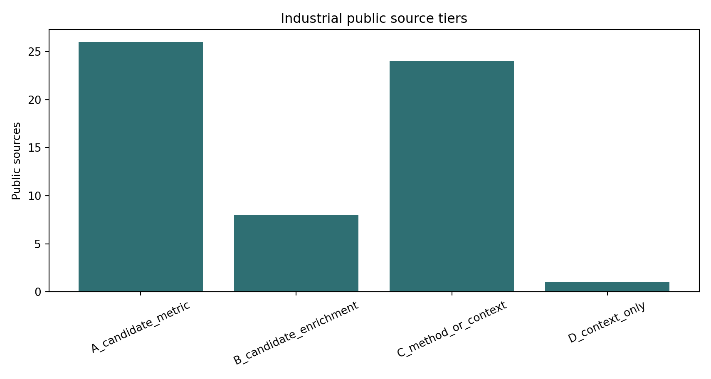
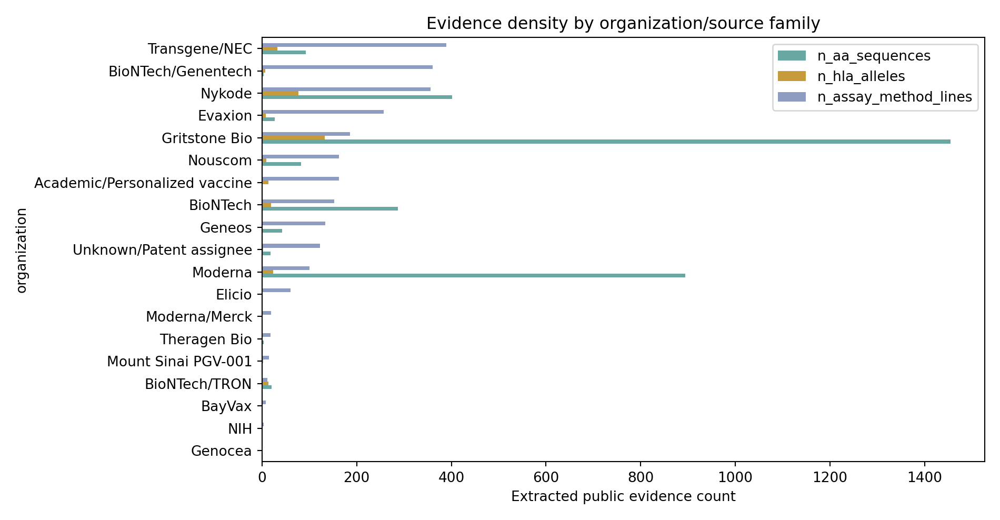
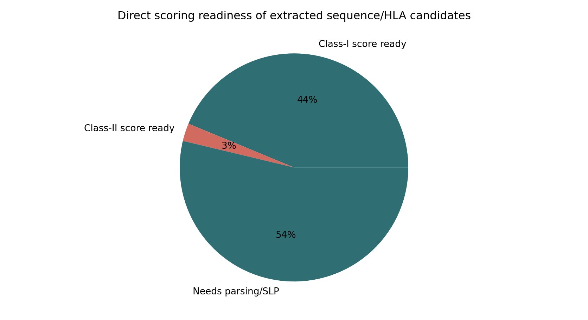
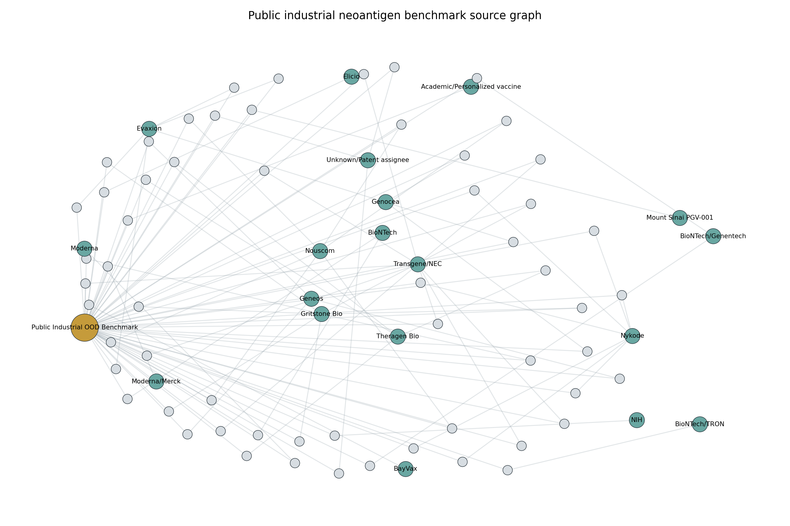

01Summary
Use this as a scout layer. The next locked step is source QA, overlap removal, manual curation of Tier A labels, then frozen scoring by KG-GA, BigMHC and CROSS_claimsafe.
02Figures




03Source Inventory
| source_id | organization | source_class | expected_tier | inferred_tier | fetch_ok | url | raw_path | text_chars | n_aa_sequences | n_hla_alleles | n_hla_classI_alleles | n_hla_classII_alleles | n_assay_method_lines | n_label_like_lines | rationale | warning |
|---|---|---|---|---|---|---|---|---|---|---|---|---|---|---|---|---|
| BIONTECH_WO2017118702_NEOEPITOPE_RNA | BioNTech | patent | C | A_candidate_metric | True | https://patents.google.com/patent/WO2017118702A1/en | /home/seungho/personal/THCA_data_analysis/project/results/public_industrial_neoantigen_benchmark_scout_2026_05_10/raw_public_sources/BIONTECH_WO2017118702_NEOEPITOPE_RNA_a3ec698509.html | 116725 | 23 | 3 | 3 | 0 | 70 | 58 | BioNTech neoepitope RNA cancer vaccine patent family. | |
| BIONTECH_WO2020252039_NEOANTIGEN_COMPOSITIONS | BioNTech | patent | C | A_candidate_metric | True | https://patents.google.com/patent/WO2020252039A1/en | /home/seungho/personal/THCA_data_analysis/project/results/public_industrial_neoantigen_benchmark_scout_2026_05_10/raw_public_sources/BIONTECH_WO2020252039_NEOANTIGEN_COMPOSITIONS_b57aafc34c.html | 900842 | 264 | 16 | 16 | 0 | 82 | 38 | BioNTech neoantigen compositions and immunotherapeutic polypeptides. | |
| BIONTECH_HRP20201671_NEOANTIGEN_USEFULNESS | BioNTech/TRON | patent | C | A_candidate_metric | True | https://patents.google.com/patent/HRP20201671T1/en | /home/seungho/personal/THCA_data_analysis/project/results/public_industrial_neoantigen_benchmark_scout_2026_05_10/raw_public_sources/BIONTECH_HRP20201671_NEOANTIGEN_USEFULNESS_dd634dc052.html | 34396 | 20 | 13 | 13 | 0 | 11 | 7 | BioNTech/TRON method for predicting usefulness of neoantigens for immunotherapy. | |
| EVAXION_EVX01_ONCOIMMUNOLOGY_PMC | Evaxion | clinical_publication | A | A_candidate_metric | True | https://pmc.ncbi.nlm.nih.gov/articles/PMC11116868/ | /home/seungho/personal/THCA_data_analysis/project/results/public_industrial_neoantigen_benchmark_scout_2026_05_10/raw_public_sources/EVAXION_EVX01_ONCOIMMUNOLOGY_PMC_26fae8d293.html | 88010 | 6 | 6 | 6 | 0 | 120 | 90 | EVX-01 clinical paper with immunogenicity, pMHC multimers and example vaccine epitope sequence. | |
| EVAXION_WO2021123232_NEOEPITOPE_CONSTRUCTS | Evaxion | patent | C | A_candidate_metric | True | https://patents.google.com/patent/WO2021123232A1/en | /home/seungho/personal/THCA_data_analysis/project/results/public_industrial_neoantigen_benchmark_scout_2026_05_10/raw_public_sources/EVAXION_WO2021123232_NEOEPITOPE_CONSTRUCTS_93997a00de.html | 120622 | 21 | 2 | 2 | 0 | 101 | 83 | Evaxion nucleic acid vaccination using neo-epitope encoding constructs. | |
| GENEOS_GNOSPV02_ASCO2023_TCR_PDF | Geneos | company_poster_pdf | B | A_candidate_metric | True | https://www.geneostx.com/wp-content/uploads/2024/04/8.6.2.5.1.1_2023_ASCO_Poster_TCR_work_24pts_FINAL.pdf | /home/seungho/personal/THCA_data_analysis/project/results/public_industrial_neoantigen_benchmark_scout_2026_05_10/raw_public_sources/GENEOS_GNOSPV02_ASCO2023_TCR_PDF_b75caf6ec9.pdf | 108161 | 10 | 0 | 0 | 0 | 30 | 15 | ASCO 2023 GNOS-PV02 poster with neoantigen-specific CD8/CD4 T-cell response context. | |
| GENEOS_GNOSPV02_AACR2024_GT30_PDF | Geneos | company_poster_pdf | B | A_candidate_metric | True | https://www.geneostx.com/wp-content/uploads/2024/04/AACR_2024-GT30-trial-poster.pdf | /home/seungho/personal/THCA_data_analysis/project/results/public_industrial_neoantigen_benchmark_scout_2026_05_10/raw_public_sources/GENEOS_GNOSPV02_AACR2024_GT30_PDF_d77c517c70.pdf | 189533 | 11 | 0 | 0 | 0 | 35 | 23 | AACR 2024 GNOS-PV02 poster with IFNg ELISpot response rates. | |
| GENEOS_EP4522752_WNT_GNOSPV02 | Geneos | patent | A | A_candidate_metric | True | https://patents.google.com/patent/EP4522752A1/en | /home/seungho/personal/THCA_data_analysis/project/results/public_industrial_neoantigen_benchmark_scout_2026_05_10/raw_public_sources/GENEOS_EP4522752_WNT_GNOSPV02_552e71f880.html | 618061 | 21 | 1 | 1 | 0 | 69 | 50 | Geneos WNT-related cancer vaccine patent with GNOS-PV02 ELISpot/TCR response examples. | |
| GRITSTONE_IL273030_NEOANTIGEN_T_CELL_THERAPY | Gritstone Bio | patent | C | A_candidate_metric | True | https://patents.google.com/patent/IL273030A/en | /home/seungho/personal/THCA_data_analysis/project/results/public_industrial_neoantigen_benchmark_scout_2026_05_10/raw_public_sources/GRITSTONE_IL273030_NEOANTIGEN_T_CELL_THERAPY_23abf54c3c.html | 30765 | 18 | 10 | 10 | 0 | 30 | 5 | Gritstone neoantigen identification for T-cell therapy patent. | |
| GRITSTONE_EP3694532_HOTSPOTS | Gritstone Bio | patent | C | A_candidate_metric | True | https://patents.google.com/patent/EP3694532A4/en | /home/seungho/personal/THCA_data_analysis/project/results/public_industrial_neoantigen_benchmark_scout_2026_05_10/raw_public_sources/GRITSTONE_EP3694532_HOTSPOTS_0128187d1d.html | 93904 | 34 | 25 | 25 | 0 | 36 | 12 | Gritstone neoantigen identification using hotspots patent. | |
| GRITSTONE_AU2016369519_MANUFACTURE_USE | Gritstone Bio | patent | C | A_candidate_metric | True | https://patents.google.com/patent/AU2016369519A1/en | /home/seungho/personal/THCA_data_analysis/project/results/public_industrial_neoantigen_benchmark_scout_2026_05_10/raw_public_sources/GRITSTONE_AU2016369519_MANUFACTURE_USE_6a3d3c4a83.html | 1291962 | 42 | 42 | 42 | 0 | 57 | 42 | Gritstone neoantigen identification, manufacture and use patent. | |
| GRITSTONE_WO2018208856_ALPHAVIRUS | Gritstone Bio | patent | C | A_candidate_metric | True | https://patents.google.com/patent/WO2018208856A1/en | /home/seungho/personal/THCA_data_analysis/project/results/public_industrial_neoantigen_benchmark_scout_2026_05_10/raw_public_sources/GRITSTONE_WO2018208856_ALPHAVIRUS_9befe6db9d.html | 1329416 | 1359 | 56 | 55 | 1 | 63 | 54 | Gritstone alphavirus neoantigen vectors patent. | |
| MODERNA_WO2017020026_CONCATEMERIC_RNA | Moderna | patent | C | A_candidate_metric | True | https://patents.google.com/patent/WO2017020026A1/en | /home/seungho/personal/THCA_data_analysis/project/results/public_industrial_neoantigen_benchmark_scout_2026_05_10/raw_public_sources/MODERNA_WO2017020026_CONCATEMERIC_RNA_d2c04e9688.html | 772272 | 894 | 23 | 23 | 0 | 100 | 73 | Moderna concatemeric peptide epitope RNA patent cited in neoepitope vaccine families. | |
| NOUSCOM_AU2018300051_NEOANTIGEN_COMPOSITION | Nouscom | patent | C | A_candidate_metric | True | https://patents.google.com/patent/AU2018300051B2/en | /home/seungho/personal/THCA_data_analysis/project/results/public_industrial_neoantigen_benchmark_scout_2026_05_10/raw_public_sources/NOUSCOM_AU2018300051_NEOANTIGEN_COMPOSITION_cc6dd0fe89.html | 146583 | 48 | 2 | 2 | 0 | 36 | 19 | Nouscom neoantigen vaccine composition patent with sequence-heavy claims. | |
| NOUSCOM_WO2019012091_NEOANTIGEN_COMPOSITION | Nouscom | patent | C | A_candidate_metric | True | https://patents.google.com/patent/WO2019012091A1/en | /home/seungho/personal/THCA_data_analysis/project/results/public_industrial_neoantigen_benchmark_scout_2026_05_10/raw_public_sources/NOUSCOM_WO2019012091_NEOANTIGEN_COMPOSITION_a8f2ad1993.html | 170705 | 20 | 2 | 2 | 0 | 108 | 75 | Nouscom neoantigen-based vaccine composition patent. | |
| NYKODE_US20220370579_THERAPEUTIC_NEOEPITOPE | Nykode | patent | C | A_candidate_metric | True | https://patents.google.com/patent/US20220370579A1/en | /home/seungho/personal/THCA_data_analysis/project/results/public_industrial_neoantigen_benchmark_scout_2026_05_10/raw_public_sources/NYKODE_US20220370579_THERAPEUTIC_NEOEPITOPE_60e4d5b2b0.html | 230113 | 195 | 34 | 34 | 0 | 108 | 85 | Nykode therapeutic anticancer neoepitope vaccine patent. | |
| NYKODE_EP3856957_SELECTING_NEOEPITOPES | Nykode | patent | A | A_candidate_metric | True | https://patents.google.com/patent/EP3856957A1/en | /home/seungho/personal/THCA_data_analysis/project/results/public_industrial_neoantigen_benchmark_scout_2026_05_10/raw_public_sources/NYKODE_EP3856957_SELECTING_NEOEPITOPES_cd7d019c06.html | 373641 | 10 | 7 | 7 | 0 | 94 | 41 | Nykode method for selecting neoepitopes; includes ELISPOT immunogenicity examples and response rates. | |
| NYKODE_US20240350601_THERAPEUTIC_NEOEPITOPE | Nykode | patent | C | A_candidate_metric | True | https://patents.google.com/patent/US20240350601A1/en | /home/seungho/personal/THCA_data_analysis/project/results/public_industrial_neoantigen_benchmark_scout_2026_05_10/raw_public_sources/NYKODE_US20240350601_THERAPEUTIC_NEOEPITOPE_f5b85409f1.html | 239762 | 193 | 34 | 34 | 0 | 108 | 84 | Nykode therapeutic anticancer neoepitope vaccine continuation with sequence examples. | |
| TRANSGENE_TG4050_MEDRXIV2026 | Transgene/NEC | preprint | A | A_candidate_metric | True | https://www.medrxiv.org/content/10.64898/2026.01.06.25342687v1.full | /home/seungho/personal/THCA_data_analysis/project/results/public_industrial_neoantigen_benchmark_scout_2026_05_10/raw_public_sources/TRANSGENE_TG4050_MEDRXIV2026_7aba8041ca.html | 87843 | 5 | 23 | 23 | 0 | 164 | 87 | TG4050 randomized phase I preprint with immunogenicity and TCR response details. | |
| TRANSGENE_TG4050_AACR2022_PDF | Transgene/NEC | company_poster_pdf | B | A_candidate_metric | True | https://www.transgene.com/wp-content/uploads/Transgene_TG4050_AACR2022_poster.pdf | /home/seungho/personal/THCA_data_analysis/project/results/public_industrial_neoantigen_benchmark_scout_2026_05_10/raw_public_sources/TRANSGENE_TG4050_AACR2022_PDF_a05e1077fc.pdf | 151826 | 7 | 0 | 0 | 0 | 31 | 22 | TG4050 phase I poster with peptide-level ELISpot context. | |
| TRANSGENE_TG4050_ASCO2022_PDF | Transgene/NEC | company_poster_pdf | B | A_candidate_metric | True | https://www.transgene.com/wp-content/uploads/Transgene_NEC_TG4050_ASCO2022_poster.pdf | /home/seungho/personal/THCA_data_analysis/project/results/public_industrial_neoantigen_benchmark_scout_2026_05_10/raw_public_sources/TRANSGENE_TG4050_ASCO2022_PDF_83c6a2733d.pdf | 186191 | 7 | 0 | 0 | 0 | 32 | 23 | ASCO 2022 TG4050 phase 1 poster for ovarian/head-neck personalized vaccine. | |
| TRANSGENE_TG4050_AACR2020_PDF | Transgene/NEC | company_poster_pdf | A | A_candidate_metric | True | https://www.transgene.com/wp-content/uploads/posters/AACR2020-myvac.pdf | /home/seungho/personal/THCA_data_analysis/project/results/public_industrial_neoantigen_benchmark_scout_2026_05_10/raw_public_sources/TRANSGENE_TG4050_AACR2020_PDF_9a340b970a.pdf | 191034 | 5 | 2 | 2 | 0 | 25 | 15 | TG4050 prediction performance poster with deconvoluted peptide immunogenicity claims. | |
| TRANSGENE_TG4050_ASCO2023_PDF | Transgene/NEC | company_poster_pdf | A | A_candidate_metric | True | https://www.transgene.com/wp-content/uploads/Transgene_ASCO2023_Safety_Immunogenicity_TG4050.pdf | /home/seungho/personal/THCA_data_analysis/project/results/public_industrial_neoantigen_benchmark_scout_2026_05_10/raw_public_sources/TRANSGENE_TG4050_ASCO2023_PDF_34cb8a8ea5.pdf | 102775 | 49 | 4 | 4 | 0 | 48 | 34 | ASCO 2023 TG4050 poster with peptide sequences, HLA prediction and ELISpot/tetramer response snippets. | |
| TRANSGENE_TG4050_SITC2025_PDF | Transgene/NEC | company_poster_pdf | A | A_candidate_metric | True | https://www.transgene.com/wp-content/uploads/20251107_TG4050_SITC2025_Poster.pdf | /home/seungho/personal/THCA_data_analysis/project/results/public_industrial_neoantigen_benchmark_scout_2026_05_10/raw_public_sources/TRANSGENE_TG4050_SITC2025_PDF_cf7325cb83.pdf | 78250 | 6 | 3 | 3 | 0 | 51 | 28 | SITC 2025 TG4050 poster with ELISpot/tetramer response summary. | |
| TRANSGENE_TG4050_SITC2024_PDF | Transgene/NEC | company_poster_pdf | A | A_candidate_metric | True | https://www.transgene.fr/wp-content/uploads/20241108_TG4050_SITC2024_Poster.pdf | /home/seungho/personal/THCA_data_analysis/project/results/public_industrial_neoantigen_benchmark_scout_2026_05_10/raw_public_sources/TRANSGENE_TG4050_SITC2024_PDF_20cc1a1e52.pdf | 107350 | 13 | 0 | 0 | 0 | 30 | 19 | SITC 2024 TG4050 poster with sustained neoantigen-specific IFN-gamma ELISpot responses. | |
| GOOGLE_PATENTS_WO2023089203 | Unknown/Patent assignee | patent | C | A_candidate_metric | True | https://patents.google.com/patent/WO2023089203A1/en | /home/seungho/personal/THCA_data_analysis/project/results/public_industrial_neoantigen_benchmark_scout_2026_05_10/raw_public_sources/GOOGLE_PATENTS_WO2023089203_c4c61e3f9c.html | 216061 | 18 | 2 | 2 | 0 | 119 | 54 | Neoantigen immunogenicity prediction patent with 25mer mut-seq, 8-12mer neo-peps and feature tools. | |
| BIONTECH_ADVANCED_SOLID_NATUREMED2024 | BioNTech/Genentech | clinical_publication | A | B_candidate_enrichment | True | https://www.nature.com/articles/s41591-024-03334-7 | /home/seungho/personal/THCA_data_analysis/project/results/public_industrial_neoantigen_benchmark_scout_2026_05_10/raw_public_sources/BIONTECH_ADVANCED_SOLID_NATUREMED2024_af1e353c89.html | 123825 | 3 | 0 | 0 | 0 | 179 | 78 | Autogene cevumeran phase 1 trial with ex vivo/IVS ELISpot and pMHC multimer validation. | |
| ELICIO_SITC2024_KRAS_PDF | Elicio | company_poster_pdf | C | B_candidate_enrichment | True | https://elicio.com/wp-content/uploads/2024/11/2024-SITC-poster-FINAL.pdf | /home/seungho/personal/THCA_data_analysis/project/results/public_industrial_neoantigen_benchmark_scout_2026_05_10/raw_public_sources/ELICIO_SITC2024_KRAS_PDF_cd397a4079.pdf | 196305 | 1 | 0 | 0 | 0 | 60 | 43 | SITC 2024 ELI-002 7P KRAS vaccine poster; off-the-shelf mutant KRAS, useful as public antigen control rather than personalized neoantigen. | |
| MODERNA_MERCK_V940_PATSNAP | Moderna/Merck | industry_analysis | C | B_candidate_enrichment | True | https://www.patsnap.com/resources/blog/articles/mrna-cancer-vaccine-pipeline-v940-bnt111-neoantigens/ | /home/seungho/personal/THCA_data_analysis/project/results/public_industrial_neoantigen_benchmark_scout_2026_05_10/raw_public_sources/MODERNA_MERCK_V940_PATSNAP_e45f03888f.html | 40266 | 1 | 0 | 0 | 0 | 19 | 17 | Public industrial summary of V940/mRNA-4157 and patent landscape. | |
| NIH_NEOANTIGEN_TCR_PATENT | NIH | patent | C | B_candidate_enrichment | True | https://www.techtransfer.nih.gov/patent/e-067-2017-0-us-02 | /home/seungho/personal/THCA_data_analysis/project/results/public_industrial_neoantigen_benchmark_scout_2026_05_10/raw_public_sources/NIH_NEOANTIGEN_TCR_PATENT_5fa9181602.html | 5194 | 1 | 0 | 0 | 0 | 4 | 0 | Public patent page for isolating neoantigen-specific TCR sequences. | |
| NOUSCOM_NZ759940_MSI_SHARED_NEOANTIGENS | Nouscom | patent | C | B_candidate_enrichment | True | https://patents.google.com/patent/NZ759940A/en | /home/seungho/personal/THCA_data_analysis/project/results/public_industrial_neoantigen_benchmark_scout_2026_05_10/raw_public_sources/NOUSCOM_NZ759940_MSI_SHARED_NEOANTIGENS_fd9d22bbd6.html | 24772 | 14 | 5 | 5 | 0 | 2 | 1 | Nouscom universal vaccine based on shared MSI tumor neoantigens. | |
| NYKODE_VB10_ASCO2025_PDF | Nykode | company_poster_pdf | B | B_candidate_enrichment | True | https://nykode.com/wp-content/uploads/2025/06/N02_ASCO_poster_2025_v4.pdf | /home/seungho/personal/THCA_data_analysis/project/results/public_industrial_neoantigen_benchmark_scout_2026_05_10/raw_public_sources/NYKODE_VB10_ASCO2025_PDF_36e68fcea3.pdf | 89627 | 4 | 2 | 2 | 0 | 44 | 28 | ASCO 2025 VB10.NEO poster with IVS/ex vivo ELISpot immunogenicity rates. | |
| THERAGEN_DEEPOMICS_NEO_PR | Theragen Bio | company_press | C | B_candidate_enrichment | True | https://theragenbio.com/eng/promotion/data.php/1000?category=66&code=data_eng&idx=1591&ptype=view | /home/seungho/personal/THCA_data_analysis/project/results/public_industrial_neoantigen_benchmark_scout_2026_05_10/raw_public_sources/THERAGEN_DEEPOMICS_NEO_PR_450f01bbe3.html | 6417 | 2 | 0 | 0 | 0 | 8 | 3 | Public patent announcement describing SLP immunogenicity, HLA binding, T-cell recognition and cleavage features. | |
| THERAGEN_DEEPOMICS_NEO_EN | Theragen Bio | company_platform | C | B_candidate_enrichment | True | https://www.theragenbio.com/eng/rnd/deep.php | /home/seungho/personal/THCA_data_analysis/project/results/public_industrial_neoantigen_benchmark_scout_2026_05_10/raw_public_sources/THERAGEN_DEEPOMICS_NEO_EN_d2fde0025b.html | 7312 | 2 | 0 | 0 | 0 | 9 | 4 | DEEPOMICS NEO public platform: HLA I/II, rare HLA, T-cell activity and SLP design claims. | |
| RCC_NEOANTIGEN_NATURE2024 | Academic/Personalized vaccine | clinical_publication | A | C_method_or_context | True | https://www.nature.com/articles/s41586-024-08507-5 | /home/seungho/personal/THCA_data_analysis/project/results/public_industrial_neoantigen_benchmark_scout_2026_05_10/raw_public_sources/RCC_NEOANTIGEN_NATURE2024_ce8f6782c6.html | 145930 | 0 | 13 | 13 | 0 | 162 | 43 | Renal cell carcinoma neoantigen vaccine study with deconvoluted IFNγ ELISpot assays. | |
| BAYVAX_PLATFORM | BayVax | company_platform | D | C_method_or_context | True | https://www.bayvaxbio.com/ | /home/seungho/personal/THCA_data_analysis/project/results/public_industrial_neoantigen_benchmark_scout_2026_05_10/raw_public_sources/BAYVAX_PLATFORM_7c75d186e2.html | 10543 | 0 | 0 | 0 | 0 | 8 | 3 | Company platform page for AI-powered immune programming and personalized neoantigen vaccines. | |
| BIONTECH_PD_INDEX_NATURE2023 | BioNTech/Genentech | clinical_publication | A | C_method_or_context | True | https://www.nature.com/articles/s41586-023-06063-y | /home/seungho/personal/THCA_data_analysis/project/results/public_industrial_neoantigen_benchmark_scout_2026_05_10/raw_public_sources/BIONTECH_PD_INDEX_NATURE2023_c581d634f3.html | 136344 | 0 | 7 | 7 | 0 | 182 | 66 | Autogene cevumeran PDAC study with ELISpot-identified immunodominant neoantigens and TCR validation. | |
| EVAXION_AACR2026_EVX01 | Evaxion | company_poster_page | B | C_method_or_context | True | https://evaxion.ai/scientific-posters/aacr-2026-evx-01/ | /home/seungho/personal/THCA_data_analysis/project/results/public_industrial_neoantigen_benchmark_scout_2026_05_10/raw_public_sources/EVAXION_AACR2026_EVX01_101ce9ff07.html | 5369 | 0 | 0 | 0 | 0 | 2 | 1 | Final immunogenicity readout for AI-selected EVX-01 neoantigen vaccine. | |
| EVAXION_ASCO2024_POSTER_PDF_ALT | Evaxion | company_poster_pdf | A | C_method_or_context | True | https://evaxion.ai/wp-content/uploads/2024/04/asco2024-poster-evx01p2_final.pdf | /home/seungho/personal/THCA_data_analysis/project/results/public_industrial_neoantigen_benchmark_scout_2026_05_10/raw_public_sources/EVAXION_ASCO2024_POSTER_PDF_ALT_dfcdd116d1.pdf | 61018 | 0 | 0 | 0 | 0 | 34 | 27 | Alternate public ASCO 2024 poster URL for AI-designed EVX-01 immunogenicity readout. | |
| GEN009_JITC2020_ABSTRACT | Genocea | conference_abstract | B | C_method_or_context | False | https://jitc.bmj.com/content/8/Suppl_3/A251.1 | 0 | 0 | 0 | 0 | 0 | 0 | 0 | SITC/JITC 2020 GEN-009 abstract with ex vivo/in vitro fluorospot immunogenicity. | fetch_failed: 403 Client Error: Forbidden for url: https://jitc.bmj.com/content/8/Suppl_3/A251.1 | |
| GEN009_JITC2021_ABSTRACT | Genocea | conference_abstract | B | C_method_or_context | False | https://jitc.bmj.com/content/9/Suppl_2/A551 | 0 | 0 | 0 | 0 | 0 | 0 | 0 | SITC/JITC 2021 GEN-009 abstract with durable immune responses. | fetch_failed: 403 Client Error: Forbidden for url: https://jitc.bmj.com/content/9/Suppl_2/A551 | |
| GRITSTONE_VIRAL_DELIVERY_USPTOREPORT | Gritstone Bio | patent | C | C_method_or_context | False | https://uspto.report/patent/app/20200010849 | 0 | 0 | 0 | 0 | 0 | 0 | 0 | Viral delivery of neoantigens patent application with selection/presentation module. | fetch_failed: 403 Client Error: Forbidden for url: https://uspto.report/patent/app/20200010849 | |
| GRITSTONE_ALPHAVIRUS_PUBCHEM | Gritstone Bio | patent | C | C_method_or_context | True | https://pubchem.ncbi.nlm.nih.gov/patent/US-11504421-B2 | /home/seungho/personal/THCA_data_analysis/project/results/public_industrial_neoantigen_benchmark_scout_2026_05_10/raw_public_sources/GRITSTONE_ALPHAVIRUS_PUBCHEM_31f4f7c5df.html | 67 | 0 | 0 | 0 | 0 | 0 | 0 | Alphavirus neoantigen vectors patent summary. | |
| GRITSTONE_EP4576103_PUBCHEM | Gritstone Bio | patent | C | C_method_or_context | True | https://pubchem.ncbi.nlm.nih.gov/patent/EP-4576103-A2 | /home/seungho/personal/THCA_data_analysis/project/results/public_industrial_neoantigen_benchmark_scout_2026_05_10/raw_public_sources/GRITSTONE_EP4576103_PUBCHEM_673d3cb617.html | 77 | 0 | 0 | 0 | 0 | 0 | 0 | Gritstone neoantigen hotspot/presentation likelihood patent summary. | |
| GRITSTONE_EP3389630_GREYB | Gritstone Bio | patent_analysis | C | C_method_or_context | True | https://ipverse.greyb.com/patents/EP3389630 | /home/seungho/personal/THCA_data_analysis/project/results/public_industrial_neoantigen_benchmark_scout_2026_05_10/raw_public_sources/GRITSTONE_EP3389630_GREYB_e966e4168c.html | 24213 | 2 | 0 | 0 | 0 | 0 | 1 | Neoantigen identification/manufacture/use patent analysis emphasizing MS and presentation modeling. | |
| PGV001_PIPELINE_FRONTIERS | Mount Sinai PGV-001 | trial_pipeline | B | C_method_or_context | True | https://www.frontiersin.org/journals/immunology/articles/10.3389/fimmu.2017.01807/full | /home/seungho/personal/THCA_data_analysis/project/results/public_industrial_neoantigen_benchmark_scout_2026_05_10/raw_public_sources/PGV001_PIPELINE_FRONTIERS_f5680527fd.html | 40180 | 0 | 2 | 2 | 0 | 15 | 4 | Personalized vaccine computational pipeline with WES/RNA and ranked SLP vaccine contents. | |
| NOUSCOM_COMPANY_PLATFORM | Nouscom | company_platform | C | C_method_or_context | True | https://nouscom.com/ | /home/seungho/personal/THCA_data_analysis/project/results/public_industrial_neoantigen_benchmark_scout_2026_05_10/raw_public_sources/NOUSCOM_COMPANY_PLATFORM_313866ae27.html | 8090 | 0 | 0 | 0 | 0 | 6 | 4 | Nouscom platform page: viral vectors encoding strings of tumor neoantigens. | |
| NOUSCOM_TECHNOLOGY | Nouscom | company_platform | C | C_method_or_context | True | https://nouscom.com/technology/ | /home/seungho/personal/THCA_data_analysis/project/results/public_industrial_neoantigen_benchmark_scout_2026_05_10/raw_public_sources/NOUSCOM_TECHNOLOGY_d7681c7784.html | 7415 | 0 | 0 | 0 | 0 | 7 | 3 | Nouscom technology page for NOUS-209/NOUS-PEV platforms. | |
| NOUSCOM_PRECLINICAL_NEWS | Nouscom | company_press | B | C_method_or_context | True | https://nouscom.com/2017/11/13/nouscoms-neoantigen-based-vaccine-synergizes-with-nktr-214-to-cure-established-tumors-in-preclinical-model/ | /home/seungho/personal/THCA_data_analysis/project/results/public_industrial_neoantigen_benchmark_scout_2026_05_10/raw_public_sources/NOUSCOM_PRECLINICAL_NEWS_b2542323af.html | 7844 | 0 | 0 | 0 | 0 | 4 | 4 | Preclinical neoantigen vaccine response context. | |
| NYKODE_VB10_NEO_PLATFORM | Nykode | company_platform | C | C_method_or_context | True | https://nykode.com/vb10-neo-a-clinically-validated-individualized-vaccine-platform/ | /home/seungho/personal/THCA_data_analysis/project/results/public_industrial_neoantigen_benchmark_scout_2026_05_10/raw_public_sources/NYKODE_VB10_NEO_PLATFORM_c2b1625040.html | 1135 | 0 | 0 | 0 | 0 | 0 | 0 | VB10.NEO clinical platform page. | |
| NYKODE_VB10_JOURNEY | Nykode | company_platform | C | C_method_or_context | True | https://nykode.com/vb10-neo-the-journey-of-a-clinically-validatedindividualized-cancer-therapy-from-tumorbiopsy-to-vaccine-administration/ | /home/seungho/personal/THCA_data_analysis/project/results/public_industrial_neoantigen_benchmark_scout_2026_05_10/raw_public_sources/NYKODE_VB10_JOURNEY_7712de4c5c.html | 1242 | 0 | 0 | 0 | 0 | 0 | 0 | VB10.NEO process page from biopsy to vaccine administration. | |
| NYKODE_VB10_NEO_PATENT_PR | Nykode | company_press_pdf | C | C_method_or_context | True | https://nykode.com/wp-content/uploads/2024/08/240814-Nykode-PR-VB10.NEO-patent_FINAL.pdf | /home/seungho/personal/THCA_data_analysis/project/results/public_industrial_neoantigen_benchmark_scout_2026_05_10/raw_public_sources/NYKODE_VB10_NEO_PATENT_PR_dac18ccd99.pdf | 4734 | 0 | 0 | 0 | 0 | 2 | 2 | Public announcement of VB10.NEO individualized neoantigen vaccine patent. | |
| THERAGEN_JUSTIA_SLP_20240071564 | Theragen Bio | patent | C | C_method_or_context | False | https://patents.justia.com/patent/20240071564 | 0 | 0 | 0 | 0 | 0 | 0 | 0 | Patent text for SLP immunogenicity prediction, cleavage features, binding and T-cell activity. | fetch_failed: 403 Client Error: Forbidden for url: https://patents.justia.com/patent/20240071564 | |
| THERAGENETEX_NEO_PATENT_KR | Theragen Bio | company_press | C | C_method_or_context | True | https://www.theragenetex.com/ko/news_detail/278/990 | /home/seungho/personal/THCA_data_analysis/project/results/public_industrial_neoantigen_benchmark_scout_2026_05_10/raw_public_sources/THERAGENETEX_NEO_PATENT_KR_5280f848a3.html | 1798 | 0 | 0 | 0 | 0 | 1 | 0 | Korean public announcement of neoantigen prediction patent using peptide and HLA allele sequences. | |
| TRANSGENE_NEC_PRESS | Transgene/NEC | company_press | B | C_method_or_context | True | https://neclab.eu/about-us/press-releases/detail/transgene-and-nec-demonstrate-high-accuracy-of-ai-based-neoantigen-prediction-for-the-design-of-individualized-cancer-vaccine-tg4050 | /home/seungho/personal/THCA_data_analysis/project/results/public_industrial_neoantigen_benchmark_scout_2026_05_10/raw_public_sources/TRANSGENE_NEC_PRESS_e92e2a86d5.html | 17888 | 0 | 0 | 0 | 0 | 7 | 2 | Press release for high accuracy AI-based neoantigen prediction for TG4050. | |
| TRANSGENE_TG4050_PRODUCT | Transgene/NEC | company_platform | B | C_method_or_context | True | https://www.transgene.com/tg4050-1/ | /home/seungho/personal/THCA_data_analysis/project/results/public_industrial_neoantigen_benchmark_scout_2026_05_10/raw_public_sources/TRANSGENE_TG4050_PRODUCT_7da8b54481.html | 3694 | 0 | 0 | 0 | 0 | 1 | 0 | TG4050 product page: NEC prediction system and myvac individualized vaccine. | |
| US12567480_GAZETTE_CLASSI_IM | Unknown/Patent assignee | patent | C | C_method_or_context | True | https://patentsgazette.uspto.gov/week09/OG/html/1544-1/US12567480-20260303.html | /home/seungho/personal/THCA_data_analysis/project/results/public_industrial_neoantigen_benchmark_scout_2026_05_10/raw_public_sources/US12567480_GAZETTE_CLASSI_IM_505c7ac781.html | 3983 | 0 | 0 | 0 | 0 | 3 | 0 | Patent claim for peptide flanking region + HLA pseudo-sequence presentation/binding model. | |
| JUSTIA_NEOANTIGENS_METHODS_20230405102 | Unknown/Patent assignee | patent | B | C_method_or_context | False | https://patents.justia.com/patent/20230405102 | 0 | 0 | 0 | 0 | 0 | 0 | 0 | Patent with many disclosed neoantigenic peptide/protein sequence examples. | fetch_failed: 403 Client Error: Forbidden for url: https://patents.justia.com/patent/20230405102 | |
| EVAXION_ASCO2024_POSTER_PDF | Evaxion | company_poster_pdf | A | D_context_only | True | https://www.evaxion-biotech.com/media/nzblm4qr/asco2024-poster-evx01p2_final.pdf | /home/seungho/personal/THCA_data_analysis/project/results/public_industrial_neoantigen_benchmark_scout_2026_05_10/raw_public_sources/EVAXION_ASCO2024_POSTER_PDF_ad9ae75b8a.pdf | 0 | 0 | 0 | 0 | 0 | 0 | 0 | ASCO 2024 poster for AI-designed EVX-01 immunogenicity readout. | text_extract_failed: Command '['pdftotext', '-layout', '/home/seungho/personal/THCA_data_analysis/project/results/public_industrial_neoantigen_benchmark_scout_2026_05_10/raw_public_sources/EVAXION_ASCO2024_POSTER_PDF_ad9ae75b8a.pdf', '-']' returned non-zero exit status 1. |
04Extracted Candidate Rows
| source_id | organization | peptide_or_sequence | length | hla_allele | mhc_class | candidate_label_tier | assay_context | label_context | context | direct_classI_score_ready | direct_classII_score_ready | pan_vaccine_score_ready | slp_or_long_sequence |
|---|---|---|---|---|---|---|---|---|---|---|---|---|---|
| BIONTECH_WO2017118702_NEOEPITOPE_RNA | BioNTech | DETERMINANTS | 12.000 | HLA-B*40:07 | I | A_like | True | True | g vaccine immunogenicity. PE20161344A1 ( en ) * 2014-01-02 2016-12-23 Memorial Sloan Kettering Cancer Center DETERMINANTS OF CANCER RESPONSE TO IMMUNOTHERAPY 2017 2017-01-05 WO PCT/EP2017/050216 patent/WO2017118702A1/en not_active Ceased 2017-01-05 CN CN201 | True | False | True | False |
| BIONTECH_WO2017118702_NEOEPITOPE_RNA | BioNTech | DETERMINANTS | 12.000 | HLA-B*40:08 | I | A_like | True | True | g vaccine immunogenicity. PE20161344A1 ( en ) * 2014-01-02 2016-12-23 Memorial Sloan Kettering Cancer Center DETERMINANTS OF CANCER RESPONSE TO IMMUNOTHERAPY 2017 2017-01-05 WO PCT/EP2017/050216 patent/WO2017118702A1/en not_active Ceased 2017-01-05 CN CN201 | True | False | True | False |
| BIONTECH_WO2017118702_NEOEPITOPE_RNA | BioNTech | DETERMINANTS | 12.000 | HLA-C*93:85 | I | A_like | True | True | g vaccine immunogenicity. PE20161344A1 ( en ) * 2014-01-02 2016-12-23 Memorial Sloan Kettering Cancer Center DETERMINANTS OF CANCER RESPONSE TO IMMUNOTHERAPY 2017 2017-01-05 WO PCT/EP2017/050216 patent/WO2017118702A1/en not_active Ceased 2017-01-05 CN CN201 | True | False | True | False |
| EVAXION_EVX01_ONCOIMMUNOLOGY_PMC | Evaxion | RESEARCH | 8.000 | HLA-C*11:11 | I | A_like | True | True | . Clinical responses correlated with PIONEER prediction score, which indicates PIONEER as a promising neoantigen prediction tool. HOW THIS STUDY MIGHT AFFECT RESEARCH, PRACTICE OR POLICY Neopeptide-based vaccines are safe to use in high-dose levels in combination with ICI therapy. This could potentially allow administration | True | False | True | False |
| EVAXION_EVX01_ONCOIMMUNOLOGY_PMC | Evaxion | RESEARCH | 8.000 | HLA-A*14:74 | I | A_like | True | True | . Clinical responses correlated with PIONEER prediction score, which indicates PIONEER as a promising neoantigen prediction tool. HOW THIS STUDY MIGHT AFFECT RESEARCH, PRACTICE OR POLICY Neopeptide-based vaccines are safe to use in high-dose levels in combination with ICI therapy. This could potentially allow administration | True | False | True | False |
| EVAXION_EVX01_ONCOIMMUNOLOGY_PMC | Evaxion | RESEARCH | 8.000 | HLA-A*14:06 | I | A_like | True | True | . Clinical responses correlated with PIONEER prediction score, which indicates PIONEER as a promising neoantigen prediction tool. HOW THIS STUDY MIGHT AFFECT RESEARCH, PRACTICE OR POLICY Neopeptide-based vaccines are safe to use in high-dose levels in combination with ICI therapy. This could potentially allow administration | True | False | True | False |
| EVAXION_EVX01_ONCOIMMUNOLOGY_PMC | Evaxion | RESEARCH | 8.000 | HLA-A*13:48 | I | A_like | True | True | . Clinical responses correlated with PIONEER prediction score, which indicates PIONEER as a promising neoantigen prediction tool. HOW THIS STUDY MIGHT AFFECT RESEARCH, PRACTICE OR POLICY Neopeptide-based vaccines are safe to use in high-dose levels in combination with ICI therapy. This could potentially allow administration | True | False | True | False |
| EVAXION_EVX01_ONCOIMMUNOLOGY_PMC | Evaxion | RESEARCH | 8.000 | HLA-A*95:03 | I | A_like | True | True | . Clinical responses correlated with PIONEER prediction score, which indicates PIONEER as a promising neoantigen prediction tool. HOW THIS STUDY MIGHT AFFECT RESEARCH, PRACTICE OR POLICY Neopeptide-based vaccines are safe to use in high-dose levels in combination with ICI therapy. This could potentially allow administration | True | False | True | False |
| EVAXION_EVX01_ONCOIMMUNOLOGY_PMC | Evaxion | RESEARCH | 8.000 | HLA-A*13:02 | I | A_like | True | True | . Clinical responses correlated with PIONEER prediction score, which indicates PIONEER as a promising neoantigen prediction tool. HOW THIS STUDY MIGHT AFFECT RESEARCH, PRACTICE OR POLICY Neopeptide-based vaccines are safe to use in high-dose levels in combination with ICI therapy. This could potentially allow administration | True | False | True | False |
| EVAXION_EVX01_ONCOIMMUNOLOGY_PMC | Evaxion | PRACTICE | 8.000 | HLA-C*11:11 | I | A_like | True | True | l responses correlated with PIONEER prediction score, which indicates PIONEER as a promising neoantigen prediction tool. HOW THIS STUDY MIGHT AFFECT RESEARCH, PRACTICE OR POLICY Neopeptide-based vaccines are safe to use in high-dose levels in combination with ICI therapy. This could potentially allow administration of higher | True | False | True | False |
| EVAXION_EVX01_ONCOIMMUNOLOGY_PMC | Evaxion | PRACTICE | 8.000 | HLA-A*14:74 | I | A_like | True | True | l responses correlated with PIONEER prediction score, which indicates PIONEER as a promising neoantigen prediction tool. HOW THIS STUDY MIGHT AFFECT RESEARCH, PRACTICE OR POLICY Neopeptide-based vaccines are safe to use in high-dose levels in combination with ICI therapy. This could potentially allow administration of higher | True | False | True | False |
| EVAXION_EVX01_ONCOIMMUNOLOGY_PMC | Evaxion | PRACTICE | 8.000 | HLA-A*14:06 | I | A_like | True | True | l responses correlated with PIONEER prediction score, which indicates PIONEER as a promising neoantigen prediction tool. HOW THIS STUDY MIGHT AFFECT RESEARCH, PRACTICE OR POLICY Neopeptide-based vaccines are safe to use in high-dose levels in combination with ICI therapy. This could potentially allow administration of higher | True | False | True | False |
| EVAXION_EVX01_ONCOIMMUNOLOGY_PMC | Evaxion | PRACTICE | 8.000 | HLA-A*13:48 | I | A_like | True | True | l responses correlated with PIONEER prediction score, which indicates PIONEER as a promising neoantigen prediction tool. HOW THIS STUDY MIGHT AFFECT RESEARCH, PRACTICE OR POLICY Neopeptide-based vaccines are safe to use in high-dose levels in combination with ICI therapy. This could potentially allow administration of higher | True | False | True | False |
| EVAXION_EVX01_ONCOIMMUNOLOGY_PMC | Evaxion | PRACTICE | 8.000 | HLA-A*95:03 | I | A_like | True | True | l responses correlated with PIONEER prediction score, which indicates PIONEER as a promising neoantigen prediction tool. HOW THIS STUDY MIGHT AFFECT RESEARCH, PRACTICE OR POLICY Neopeptide-based vaccines are safe to use in high-dose levels in combination with ICI therapy. This could potentially allow administration of higher | True | False | True | False |
| EVAXION_EVX01_ONCOIMMUNOLOGY_PMC | Evaxion | PRACTICE | 8.000 | HLA-A*13:02 | I | A_like | True | True | l responses correlated with PIONEER prediction score, which indicates PIONEER as a promising neoantigen prediction tool. HOW THIS STUDY MIGHT AFFECT RESEARCH, PRACTICE OR POLICY Neopeptide-based vaccines are safe to use in high-dose levels in combination with ICI therapy. This could potentially allow administration of higher | True | False | True | False |
| EVAXION_EVX01_ONCOIMMUNOLOGY_PMC | Evaxion | KLYASPSQFIK | 11.000 | HLA-C*11:11 | I | A_like | True | True | al peptides derived from vaccine peptide 2 and 6 ( figure 4B ). In patient 8, VaccNARTs were observed against a minimal peptide derived from vaccine peptide 3 (KLYASPSQFIK). This response was increased after ICI treatment T2 and again after IM vaccination T4 ( figure 4B ). Figure 4. Open in a new tab EVX-01 prestimulated PBMCs | True | False | True | False |
| EVAXION_EVX01_ONCOIMMUNOLOGY_PMC | Evaxion | KLYASPSQFIK | 11.000 | HLA-A*14:74 | I | A_like | True | True | al peptides derived from vaccine peptide 2 and 6 ( figure 4B ). In patient 8, VaccNARTs were observed against a minimal peptide derived from vaccine peptide 3 (KLYASPSQFIK). This response was increased after ICI treatment T2 and again after IM vaccination T4 ( figure 4B ). Figure 4. Open in a new tab EVX-01 prestimulated PBMCs | True | False | True | False |
| EVAXION_EVX01_ONCOIMMUNOLOGY_PMC | Evaxion | KLYASPSQFIK | 11.000 | HLA-A*14:06 | I | A_like | True | True | al peptides derived from vaccine peptide 2 and 6 ( figure 4B ). In patient 8, VaccNARTs were observed against a minimal peptide derived from vaccine peptide 3 (KLYASPSQFIK). This response was increased after ICI treatment T2 and again after IM vaccination T4 ( figure 4B ). Figure 4. Open in a new tab EVX-01 prestimulated PBMCs | True | False | True | False |
| EVAXION_EVX01_ONCOIMMUNOLOGY_PMC | Evaxion | KLYASPSQFIK | 11.000 | HLA-A*13:48 | I | A_like | True | True | al peptides derived from vaccine peptide 2 and 6 ( figure 4B ). In patient 8, VaccNARTs were observed against a minimal peptide derived from vaccine peptide 3 (KLYASPSQFIK). This response was increased after ICI treatment T2 and again after IM vaccination T4 ( figure 4B ). Figure 4. Open in a new tab EVX-01 prestimulated PBMCs | True | False | True | False |
| EVAXION_EVX01_ONCOIMMUNOLOGY_PMC | Evaxion | KLYASPSQFIK | 11.000 | HLA-A*95:03 | I | A_like | True | True | al peptides derived from vaccine peptide 2 and 6 ( figure 4B ). In patient 8, VaccNARTs were observed against a minimal peptide derived from vaccine peptide 3 (KLYASPSQFIK). This response was increased after ICI treatment T2 and again after IM vaccination T4 ( figure 4B ). Figure 4. Open in a new tab EVX-01 prestimulated PBMCs | True | False | True | False |
| EVAXION_EVX01_ONCOIMMUNOLOGY_PMC | Evaxion | KLYASPSQFIK | 11.000 | HLA-A*13:02 | I | A_like | True | True | al peptides derived from vaccine peptide 2 and 6 ( figure 4B ). In patient 8, VaccNARTs were observed against a minimal peptide derived from vaccine peptide 3 (KLYASPSQFIK). This response was increased after ICI treatment T2 and again after IM vaccination T4 ( figure 4B ). Figure 4. Open in a new tab EVX-01 prestimulated PBMCs | True | False | True | False |
| EVAXION_WO2021123232_NEOEPITOPE_CONSTRUCTS | Evaxion | KFKASRASI | 9.000 | HLA-A*31:61 | I | A_like | True | True | g of pVAXl S16A Neovector DNA induced S16A neoepitope reactive splenic CD8+ T cells (Fig. CD8+ T cells specific to CT26 neo-peptide C22 (H-2Kd minimal binder KFKASRASI) were observed in tail vein blood from study day 1 (one day after the third immunization) in mice immunized with naked S16A Neovector (Fig. 4D). Figs. 5A and | True | False | True | False |
| EVAXION_WO2021123232_NEOEPITOPE_CONSTRUCTS | Evaxion | KFKASRASI | 9.000 | HLA-A*28:17 | I | A_like | True | True | g of pVAXl S16A Neovector DNA induced S16A neoepitope reactive splenic CD8+ T cells (Fig. CD8+ T cells specific to CT26 neo-peptide C22 (H-2Kd minimal binder KFKASRASI) were observed in tail vein blood from study day 1 (one day after the third immunization) in mice immunized with naked S16A Neovector (Fig. 4D). Figs. 5A and | True | False | True | False |
| GENEOS_EP4522752_WNT_GNOSPV02 | Geneos | PATIENTS | 8.000 | HLA-A*32:53 | I | A_like | True | True | trial carcinoma non-small cell lung cancer head and neck cancer bladder cancer ovarian cancer colorectal cancer and prostate cancer 000566 IMMUNOLOGY â PATIENTS PT1, PT6, PT2 and PT4 000567 FIG. 19 shows IFNg ELISpot responses to epitopes used in the neoantigen vaccine (GNOS-PV02) generated for PT1. Patient PT1 had | True | False | True | False |
| GENEOS_EP4522752_WNT_GNOSPV02 | Geneos | DRAWINGS | 8.000 | HLA-A*32:53 | I | A_like | True | True | is enhanced from about 10 to about 15% as compared to the CD8+ T cell response of a subject untreated with the pharmaceutical composition. BRIEF DESCRIPTION OF DRAWINGS 00037 FIG.1A is a diagram depicting the elements of the pGX0001 plasmid, including the multiple cloning site. FIG.1B is a diagram depicting the elements of the | True | False | True | False |
| GENEOS_EP4522752_WNT_GNOSPV02 | Geneos | CLINICAL | 8.000 | HLA-A*32:53 | I | A_like | True | True | rs. Activation markers including Ki67 and CD69 were measured. 000574 EXAMPLE 4 000575 GNOS-PV02 ENCODING GREATER THAN 20 NEOANTIGENS DRIVES STRONGER AND LONGER CLINICAL RESPONSES IN PATIENTS WITH AND WITHOUT WNT ACTIVATING MUTATIONS 000576 Advanced (unresectable) HCC patients were treated with GNOS-PV02 in combination with INO | True | False | True | False |
| GENEOS_EP4522752_WNT_GNOSPV02 | Geneos | ACTIVATING | 10.000 | HLA-A*32:53 | I | A_like | True | True | measured. 000574 EXAMPLE 4 000575 GNOS-PV02 ENCODING GREATER THAN 20 NEOANTIGENS DRIVES STRONGER AND LONGER CLINICAL RESPONSES IN PATIENTS WITH AND WITHOUT WNT ACTIVATING MUTATIONS 000576 Advanced (unresectable) HCC patients were treated with GNOS-PV02 in combination with INO-9012 [encodes IL12] and pembrolizumab in second line | True | False | True | False |
| GRITSTONE_AU2016369519_MANUFACTURE_USE | Gritstone Bio | PREDICTING | 10.000 | HLA-C*58:17 | I | A_like | True | True | accines and uses thereof MX2021007556A ( en ) * 2018-12-21 2021-09-10 Biontech Us Inc METHOD AND SYSTEMS FOR PREDICTING SPECIFIC EPITOPES OF HLA CLASS II AND CHARACTERIZATION OF CD4+ T CELLS. CN109712672B ( en ) * 2018-12-29 2021-0 | True | False | True | False |
| GRITSTONE_AU2016369519_MANUFACTURE_USE | Gritstone Bio | PREDICTING | 10.000 | HLA-A*02:01 | I | A_like | True | True | accines and uses thereof MX2021007556A ( en ) * 2018-12-21 2021-09-10 Biontech Us Inc METHOD AND SYSTEMS FOR PREDICTING SPECIFIC EPITOPES OF HLA CLASS II AND CHARACTERIZATION OF CD4+ T CELLS. CN109712672B ( en ) * 2018-12-29 2021-0 | True | False | True | False |
| GRITSTONE_AU2016369519_MANUFACTURE_USE | Gritstone Bio | PREDICTING | 10.000 | HLA-B*07:02 | I | A_like | True | True | accines and uses thereof MX2021007556A ( en ) * 2018-12-21 2021-09-10 Biontech Us Inc METHOD AND SYSTEMS FOR PREDICTING SPECIFIC EPITOPES OF HLA CLASS II AND CHARACTERIZATION OF CD4+ T CELLS. CN109712672B ( en ) * 2018-12-29 2021-0 | True | False | True | False |
| GRITSTONE_AU2016369519_MANUFACTURE_USE | Gritstone Bio | PREDICTING | 10.000 | HLA-B*08:03 | I | A_like | True | True | accines and uses thereof MX2021007556A ( en ) * 2018-12-21 2021-09-10 Biontech Us Inc METHOD AND SYSTEMS FOR PREDICTING SPECIFIC EPITOPES OF HLA CLASS II AND CHARACTERIZATION OF CD4+ T CELLS. CN109712672B ( en ) * 2018-12-29 2021-0 | True | False | True | False |
| GRITSTONE_AU2016369519_MANUFACTURE_USE | Gritstone Bio | PREDICTING | 10.000 | HLA-C*01:04 | I | A_like | True | True | accines and uses thereof MX2021007556A ( en ) * 2018-12-21 2021-09-10 Biontech Us Inc METHOD AND SYSTEMS FOR PREDICTING SPECIFIC EPITOPES OF HLA CLASS II AND CHARACTERIZATION OF CD4+ T CELLS. CN109712672B ( en ) * 2018-12-29 2021-0 | True | False | True | False |
| GRITSTONE_AU2016369519_MANUFACTURE_USE | Gritstone Bio | PREDICTING | 10.000 | HLA-B*01:04 | I | A_like | True | True | accines and uses thereof MX2021007556A ( en ) * 2018-12-21 2021-09-10 Biontech Us Inc METHOD AND SYSTEMS FOR PREDICTING SPECIFIC EPITOPES OF HLA CLASS II AND CHARACTERIZATION OF CD4+ T CELLS. CN109712672B ( en ) * 2018-12-29 2021-0 | True | False | True | False |
| GRITSTONE_AU2016369519_MANUFACTURE_USE | Gritstone Bio | PREDICTING | 10.000 | HLA-A*01:01 | I | A_like | True | True | accines and uses thereof MX2021007556A ( en ) * 2018-12-21 2021-09-10 Biontech Us Inc METHOD AND SYSTEMS FOR PREDICTING SPECIFIC EPITOPES OF HLA CLASS II AND CHARACTERIZATION OF CD4+ T CELLS. CN109712672B ( en ) * 2018-12-29 2021-0 | True | False | True | False |
| GRITSTONE_AU2016369519_MANUFACTURE_USE | Gritstone Bio | PREDICTING | 10.000 | HLA-B*08:01 | I | A_like | True | True | accines and uses thereof MX2021007556A ( en ) * 2018-12-21 2021-09-10 Biontech Us Inc METHOD AND SYSTEMS FOR PREDICTING SPECIFIC EPITOPES OF HLA CLASS II AND CHARACTERIZATION OF CD4+ T CELLS. CN109712672B ( en ) * 2018-12-29 2021-0 | True | False | True | False |
| GRITSTONE_AU2016369519_MANUFACTURE_USE | Gritstone Bio | EGFRVIII | 8.000 | HLA-C*58:17 | I | A_like | True | True | S2684684T3 ( en ) 2010-11-17 2018-10-04 Aduro Biotech, Inc. Methods and compositions for inducing an immune response to EGFRVIII GB201021289D0 ( en ) 2010-12-15 2011-01-26 Immatics Biotechnologies Gmbh Novel biomarkers for a prediction of th | True | False | True | False |
| GRITSTONE_AU2016369519_MANUFACTURE_USE | Gritstone Bio | EGFRVIII | 8.000 | HLA-A*02:01 | I | A_like | True | True | S2684684T3 ( en ) 2010-11-17 2018-10-04 Aduro Biotech, Inc. Methods and compositions for inducing an immune response to EGFRVIII GB201021289D0 ( en ) 2010-12-15 2011-01-26 Immatics Biotechnologies Gmbh Novel biomarkers for a prediction of th | True | False | True | False |
| GRITSTONE_AU2016369519_MANUFACTURE_USE | Gritstone Bio | EGFRVIII | 8.000 | HLA-B*07:02 | I | A_like | True | True | S2684684T3 ( en ) 2010-11-17 2018-10-04 Aduro Biotech, Inc. Methods and compositions for inducing an immune response to EGFRVIII GB201021289D0 ( en ) 2010-12-15 2011-01-26 Immatics Biotechnologies Gmbh Novel biomarkers for a prediction of th | True | False | True | False |
| GRITSTONE_AU2016369519_MANUFACTURE_USE | Gritstone Bio | EGFRVIII | 8.000 | HLA-B*08:03 | I | A_like | True | True | S2684684T3 ( en ) 2010-11-17 2018-10-04 Aduro Biotech, Inc. Methods and compositions for inducing an immune response to EGFRVIII GB201021289D0 ( en ) 2010-12-15 2011-01-26 Immatics Biotechnologies Gmbh Novel biomarkers for a prediction of th | True | False | True | False |
| GRITSTONE_AU2016369519_MANUFACTURE_USE | Gritstone Bio | EGFRVIII | 8.000 | HLA-C*01:04 | I | A_like | True | True | S2684684T3 ( en ) 2010-11-17 2018-10-04 Aduro Biotech, Inc. Methods and compositions for inducing an immune response to EGFRVIII GB201021289D0 ( en ) 2010-12-15 2011-01-26 Immatics Biotechnologies Gmbh Novel biomarkers for a prediction of th | True | False | True | False |
| GRITSTONE_AU2016369519_MANUFACTURE_USE | Gritstone Bio | EGFRVIII | 8.000 | HLA-B*01:04 | I | A_like | True | True | S2684684T3 ( en ) 2010-11-17 2018-10-04 Aduro Biotech, Inc. Methods and compositions for inducing an immune response to EGFRVIII GB201021289D0 ( en ) 2010-12-15 2011-01-26 Immatics Biotechnologies Gmbh Novel biomarkers for a prediction of th | True | False | True | False |
| GRITSTONE_AU2016369519_MANUFACTURE_USE | Gritstone Bio | EGFRVIII | 8.000 | HLA-A*01:01 | I | A_like | True | True | S2684684T3 ( en ) 2010-11-17 2018-10-04 Aduro Biotech, Inc. Methods and compositions for inducing an immune response to EGFRVIII GB201021289D0 ( en ) 2010-12-15 2011-01-26 Immatics Biotechnologies Gmbh Novel biomarkers for a prediction of th | True | False | True | False |
| GRITSTONE_AU2016369519_MANUFACTURE_USE | Gritstone Bio | EGFRVIII | 8.000 | HLA-B*08:01 | I | A_like | True | True | S2684684T3 ( en ) 2010-11-17 2018-10-04 Aduro Biotech, Inc. Methods and compositions for inducing an immune response to EGFRVIII GB201021289D0 ( en ) 2010-12-15 2011-01-26 Immatics Biotechnologies Gmbh Novel biomarkers for a prediction of th | True | False | True | False |
| GRITSTONE_AU2016369519_MANUFACTURE_USE | Gritstone Bio | DETERMINANTS | 12.000 | HLA-C*58:17 | I | A_like | True | True | g neoantigen vaccines PE20161344A1 ( en ) 2014-01-02 2016-12-23 Memorial Sloan Kettering Cancer Center DETERMINANTS OF CANCER RESPONSE TO IMMUNOTHERAPY IL294746B2 ( en ) * 2014-01-27 2024-04-01 Molecular Templates Inc De-immuni | True | False | True | False |
| GRITSTONE_AU2016369519_MANUFACTURE_USE | Gritstone Bio | DETERMINANTS | 12.000 | HLA-A*02:01 | I | A_like | True | True | g neoantigen vaccines PE20161344A1 ( en ) 2014-01-02 2016-12-23 Memorial Sloan Kettering Cancer Center DETERMINANTS OF CANCER RESPONSE TO IMMUNOTHERAPY IL294746B2 ( en ) * 2014-01-27 2024-04-01 Molecular Templates Inc De-immuni | True | False | True | False |
| GRITSTONE_AU2016369519_MANUFACTURE_USE | Gritstone Bio | DETERMINANTS | 12.000 | HLA-B*07:02 | I | A_like | True | True | g neoantigen vaccines PE20161344A1 ( en ) 2014-01-02 2016-12-23 Memorial Sloan Kettering Cancer Center DETERMINANTS OF CANCER RESPONSE TO IMMUNOTHERAPY IL294746B2 ( en ) * 2014-01-27 2024-04-01 Molecular Templates Inc De-immuni | True | False | True | False |
| GRITSTONE_AU2016369519_MANUFACTURE_USE | Gritstone Bio | DETERMINANTS | 12.000 | HLA-B*08:03 | I | A_like | True | True | g neoantigen vaccines PE20161344A1 ( en ) 2014-01-02 2016-12-23 Memorial Sloan Kettering Cancer Center DETERMINANTS OF CANCER RESPONSE TO IMMUNOTHERAPY IL294746B2 ( en ) * 2014-01-27 2024-04-01 Molecular Templates Inc De-immuni | True | False | True | False |
| GRITSTONE_AU2016369519_MANUFACTURE_USE | Gritstone Bio | DETERMINANTS | 12.000 | HLA-C*01:04 | I | A_like | True | True | g neoantigen vaccines PE20161344A1 ( en ) 2014-01-02 2016-12-23 Memorial Sloan Kettering Cancer Center DETERMINANTS OF CANCER RESPONSE TO IMMUNOTHERAPY IL294746B2 ( en ) * 2014-01-27 2024-04-01 Molecular Templates Inc De-immuni | True | False | True | False |
| GRITSTONE_AU2016369519_MANUFACTURE_USE | Gritstone Bio | DETERMINANTS | 12.000 | HLA-B*01:04 | I | A_like | True | True | g neoantigen vaccines PE20161344A1 ( en ) 2014-01-02 2016-12-23 Memorial Sloan Kettering Cancer Center DETERMINANTS OF CANCER RESPONSE TO IMMUNOTHERAPY IL294746B2 ( en ) * 2014-01-27 2024-04-01 Molecular Templates Inc De-immuni | True | False | True | False |
| GRITSTONE_AU2016369519_MANUFACTURE_USE | Gritstone Bio | DETERMINANTS | 12.000 | HLA-A*01:01 | I | A_like | True | True | g neoantigen vaccines PE20161344A1 ( en ) 2014-01-02 2016-12-23 Memorial Sloan Kettering Cancer Center DETERMINANTS OF CANCER RESPONSE TO IMMUNOTHERAPY IL294746B2 ( en ) * 2014-01-27 2024-04-01 Molecular Templates Inc De-immuni | True | False | True | False |
| GRITSTONE_AU2016369519_MANUFACTURE_USE | Gritstone Bio | DETERMINANTS | 12.000 | HLA-B*08:01 | I | A_like | True | True | g neoantigen vaccines PE20161344A1 ( en ) 2014-01-02 2016-12-23 Memorial Sloan Kettering Cancer Center DETERMINANTS OF CANCER RESPONSE TO IMMUNOTHERAPY IL294746B2 ( en ) * 2014-01-27 2024-04-01 Molecular Templates Inc De-immuni | True | False | True | False |
| GRITSTONE_EP3694532_HOTSPOTS | Gritstone Bio | EGFRVIII | 8.000 | HLA-A*30:78 | I | A_like | True | True | S2684684T3 ( en ) 2010-11-17 2018-10-04 Aduro Biotech, Inc. Methods and compositions for inducing an immune response to EGFRVIII GB201021289D0 ( en ) 2010-12-15 2011-01-26 Immatics Biotechnologies Gmbh Novel biomarkers for a prediction of th | True | False | True | False |
| GRITSTONE_EP3694532_HOTSPOTS | Gritstone Bio | EGFRVIII | 8.000 | HLA-B*20:20 | I | A_like | True | True | S2684684T3 ( en ) 2010-11-17 2018-10-04 Aduro Biotech, Inc. Methods and compositions for inducing an immune response to EGFRVIII GB201021289D0 ( en ) 2010-12-15 2011-01-26 Immatics Biotechnologies Gmbh Novel biomarkers for a prediction of th | True | False | True | False |
| GRITSTONE_EP3694532_HOTSPOTS | Gritstone Bio | EGFRVIII | 8.000 | HLA-A*31:74 | I | A_like | True | True | S2684684T3 ( en ) 2010-11-17 2018-10-04 Aduro Biotech, Inc. Methods and compositions for inducing an immune response to EGFRVIII GB201021289D0 ( en ) 2010-12-15 2011-01-26 Immatics Biotechnologies Gmbh Novel biomarkers for a prediction of th | True | False | True | False |
| GRITSTONE_EP3694532_HOTSPOTS | Gritstone Bio | EGFRVIII | 8.000 | HLA-B*83:11 | I | A_like | True | True | S2684684T3 ( en ) 2010-11-17 2018-10-04 Aduro Biotech, Inc. Methods and compositions for inducing an immune response to EGFRVIII GB201021289D0 ( en ) 2010-12-15 2011-01-26 Immatics Biotechnologies Gmbh Novel biomarkers for a prediction of th | True | False | True | False |
| GRITSTONE_EP3694532_HOTSPOTS | Gritstone Bio | EGFRVIII | 8.000 | HLA-A*20:32 | I | A_like | True | True | S2684684T3 ( en ) 2010-11-17 2018-10-04 Aduro Biotech, Inc. Methods and compositions for inducing an immune response to EGFRVIII GB201021289D0 ( en ) 2010-12-15 2011-01-26 Immatics Biotechnologies Gmbh Novel biomarkers for a prediction of th | True | False | True | False |
| GRITSTONE_EP3694532_HOTSPOTS | Gritstone Bio | EGFRVIII | 8.000 | HLA-A*23:09 | I | A_like | True | True | S2684684T3 ( en ) 2010-11-17 2018-10-04 Aduro Biotech, Inc. Methods and compositions for inducing an immune response to EGFRVIII GB201021289D0 ( en ) 2010-12-15 2011-01-26 Immatics Biotechnologies Gmbh Novel biomarkers for a prediction of th | True | False | True | False |
| GRITSTONE_EP3694532_HOTSPOTS | Gritstone Bio | EGFRVIII | 8.000 | HLA-B*00:18 | I | A_like | True | True | S2684684T3 ( en ) 2010-11-17 2018-10-04 Aduro Biotech, Inc. Methods and compositions for inducing an immune response to EGFRVIII GB201021289D0 ( en ) 2010-12-15 2011-01-26 Immatics Biotechnologies Gmbh Novel biomarkers for a prediction of th | True | False | True | False |
| GRITSTONE_EP3694532_HOTSPOTS | Gritstone Bio | EGFRVIII | 8.000 | HLA-A*05:00 | I | A_like | True | True | S2684684T3 ( en ) 2010-11-17 2018-10-04 Aduro Biotech, Inc. Methods and compositions for inducing an immune response to EGFRVIII GB201021289D0 ( en ) 2010-12-15 2011-01-26 Immatics Biotechnologies Gmbh Novel biomarkers for a prediction of th | True | False | True | False |
| GRITSTONE_EP3694532_HOTSPOTS | Gritstone Bio | DETERMINANTS | 12.000 | HLA-A*30:78 | I | A_like | True | True | g neoantigen vaccines PE20161344A1 ( en ) 2014-01-02 2016-12-23 Memorial Sloan Kettering Cancer Center DETERMINANTS OF CANCER RESPONSE TO IMMUNOTHERAPY IL294746B2 ( en ) 2014-01-27 2024-04-01 Molecular Templates Inc De-immunized | True | False | True | False |
| GRITSTONE_EP3694532_HOTSPOTS | Gritstone Bio | DETERMINANTS | 12.000 | HLA-B*20:20 | I | A_like | True | True | g neoantigen vaccines PE20161344A1 ( en ) 2014-01-02 2016-12-23 Memorial Sloan Kettering Cancer Center DETERMINANTS OF CANCER RESPONSE TO IMMUNOTHERAPY IL294746B2 ( en ) 2014-01-27 2024-04-01 Molecular Templates Inc De-immunized | True | False | True | False |
| GRITSTONE_EP3694532_HOTSPOTS | Gritstone Bio | DETERMINANTS | 12.000 | HLA-A*31:74 | I | A_like | True | True | g neoantigen vaccines PE20161344A1 ( en ) 2014-01-02 2016-12-23 Memorial Sloan Kettering Cancer Center DETERMINANTS OF CANCER RESPONSE TO IMMUNOTHERAPY IL294746B2 ( en ) 2014-01-27 2024-04-01 Molecular Templates Inc De-immunized | True | False | True | False |
| GRITSTONE_EP3694532_HOTSPOTS | Gritstone Bio | DETERMINANTS | 12.000 | HLA-B*83:11 | I | A_like | True | True | g neoantigen vaccines PE20161344A1 ( en ) 2014-01-02 2016-12-23 Memorial Sloan Kettering Cancer Center DETERMINANTS OF CANCER RESPONSE TO IMMUNOTHERAPY IL294746B2 ( en ) 2014-01-27 2024-04-01 Molecular Templates Inc De-immunized | True | False | True | False |
| GRITSTONE_EP3694532_HOTSPOTS | Gritstone Bio | DETERMINANTS | 12.000 | HLA-A*20:32 | I | A_like | True | True | g neoantigen vaccines PE20161344A1 ( en ) 2014-01-02 2016-12-23 Memorial Sloan Kettering Cancer Center DETERMINANTS OF CANCER RESPONSE TO IMMUNOTHERAPY IL294746B2 ( en ) 2014-01-27 2024-04-01 Molecular Templates Inc De-immunized | True | False | True | False |
| GRITSTONE_EP3694532_HOTSPOTS | Gritstone Bio | DETERMINANTS | 12.000 | HLA-A*23:09 | I | A_like | True | True | g neoantigen vaccines PE20161344A1 ( en ) 2014-01-02 2016-12-23 Memorial Sloan Kettering Cancer Center DETERMINANTS OF CANCER RESPONSE TO IMMUNOTHERAPY IL294746B2 ( en ) 2014-01-27 2024-04-01 Molecular Templates Inc De-immunized | True | False | True | False |
| GRITSTONE_EP3694532_HOTSPOTS | Gritstone Bio | DETERMINANTS | 12.000 | HLA-B*00:18 | I | A_like | True | True | g neoantigen vaccines PE20161344A1 ( en ) 2014-01-02 2016-12-23 Memorial Sloan Kettering Cancer Center DETERMINANTS OF CANCER RESPONSE TO IMMUNOTHERAPY IL294746B2 ( en ) 2014-01-27 2024-04-01 Molecular Templates Inc De-immunized | True | False | True | False |
| GRITSTONE_EP3694532_HOTSPOTS | Gritstone Bio | DETERMINANTS | 12.000 | HLA-A*05:00 | I | A_like | True | True | g neoantigen vaccines PE20161344A1 ( en ) 2014-01-02 2016-12-23 Memorial Sloan Kettering Cancer Center DETERMINANTS OF CANCER RESPONSE TO IMMUNOTHERAPY IL294746B2 ( en ) 2014-01-27 2024-04-01 Molecular Templates Inc De-immunized | True | False | True | False |
| GRITSTONE_WO2018208856_ALPHAVIRUS | Gritstone Bio | SIINFEKL | 8.000 | HLA-A*30:62 | I | A_like | True | True | al peptides (SP) and/or transmembrane (TM) domains, feature next to the five marker human T cell epitopes (epitopes 1 through 5) also two mouse T cell epitopes SIINFEKL (SII) and SPSYAYHQF (A5), and use either the non natural linker AAY- or natural linkers flanking the T cell epitopes on both sides (25mer) . Ub ubiquitin SP | True | False | True | False |
| GRITSTONE_WO2018208856_ALPHAVIRUS | Gritstone Bio | SIINFEKL | 8.000 | HLA-A*20:19 | I | A_like | True | True | al peptides (SP) and/or transmembrane (TM) domains, feature next to the five marker human T cell epitopes (epitopes 1 through 5) also two mouse T cell epitopes SIINFEKL (SII) and SPSYAYHQF (A5), and use either the non natural linker AAY- or natural linkers flanking the T cell epitopes on both sides (25mer) . Ub ubiquitin SP | True | False | True | False |
| GRITSTONE_WO2018208856_ALPHAVIRUS | Gritstone Bio | SIINFEKL | 8.000 | HLA-C*20:19 | I | A_like | True | True | al peptides (SP) and/or transmembrane (TM) domains, feature next to the five marker human T cell epitopes (epitopes 1 through 5) also two mouse T cell epitopes SIINFEKL (SII) and SPSYAYHQF (A5), and use either the non natural linker AAY- or natural linkers flanking the T cell epitopes on both sides (25mer) . Ub ubiquitin SP | True | False | True | False |
| GRITSTONE_WO2018208856_ALPHAVIRUS | Gritstone Bio | SIINFEKL | 8.000 | HLA-A*02:01 | I | A_like | True | True | al peptides (SP) and/or transmembrane (TM) domains, feature next to the five marker human T cell epitopes (epitopes 1 through 5) also two mouse T cell epitopes SIINFEKL (SII) and SPSYAYHQF (A5), and use either the non natural linker AAY- or natural linkers flanking the T cell epitopes on both sides (25mer) . Ub ubiquitin SP | True | False | True | False |
| GRITSTONE_WO2018208856_ALPHAVIRUS | Gritstone Bio | SIINFEKL | 8.000 | HLA-B*07:02 | I | A_like | True | True | al peptides (SP) and/or transmembrane (TM) domains, feature next to the five marker human T cell epitopes (epitopes 1 through 5) also two mouse T cell epitopes SIINFEKL (SII) and SPSYAYHQF (A5), and use either the non natural linker AAY- or natural linkers flanking the T cell epitopes on both sides (25mer) . Ub ubiquitin SP | True | False | True | False |
| GRITSTONE_WO2018208856_ALPHAVIRUS | Gritstone Bio | SIINFEKL | 8.000 | HLA-C*58:17 | I | A_like | True | True | al peptides (SP) and/or transmembrane (TM) domains, feature next to the five marker human T cell epitopes (epitopes 1 through 5) also two mouse T cell epitopes SIINFEKL (SII) and SPSYAYHQF (A5), and use either the non natural linker AAY- or natural linkers flanking the T cell epitopes on both sides (25mer) . Ub ubiquitin SP | True | False | True | False |
| GRITSTONE_WO2018208856_ALPHAVIRUS | Gritstone Bio | SIINFEKL | 8.000 | HLA-B*00:10 | I | A_like | True | True | al peptides (SP) and/or transmembrane (TM) domains, feature next to the five marker human T cell epitopes (epitopes 1 through 5) also two mouse T cell epitopes SIINFEKL (SII) and SPSYAYHQF (A5), and use either the non natural linker AAY- or natural linkers flanking the T cell epitopes on both sides (25mer) . Ub ubiquitin SP | True | False | True | False |
| GRITSTONE_WO2018208856_ALPHAVIRUS | Gritstone Bio | SIINFEKL | 8.000 | HLA-B*08:01 | I | A_like | True | True | al peptides (SP) and/or transmembrane (TM) domains, feature next to the five marker human T cell epitopes (epitopes 1 through 5) also two mouse T cell epitopes SIINFEKL (SII) and SPSYAYHQF (A5), and use either the non natural linker AAY- or natural linkers flanking the T cell epitopes on both sides (25mer) . Ub ubiquitin SP | True | False | True | False |
| GRITSTONE_WO2018208856_ALPHAVIRUS | Gritstone Bio | SPSYAYHQF | 9.000 | HLA-A*30:62 | I | A_like | True | True | d/or transmembrane (TM) domains, feature next to the five marker human T cell epitopes (epitopes 1 through 5) also two mouse T cell epitopes SIINFEKL (SII) and SPSYAYHQF (A5), and use either the non natural linker AAY- or natural linkers flanking the T cell epitopes on both sides (25mer) . Ub ubiquitin SP signal peptides T | True | False | True | False |
| GRITSTONE_WO2018208856_ALPHAVIRUS | Gritstone Bio | SPSYAYHQF | 9.000 | HLA-A*20:19 | I | A_like | True | True | d/or transmembrane (TM) domains, feature next to the five marker human T cell epitopes (epitopes 1 through 5) also two mouse T cell epitopes SIINFEKL (SII) and SPSYAYHQF (A5), and use either the non natural linker AAY- or natural linkers flanking the T cell epitopes on both sides (25mer) . Ub ubiquitin SP signal peptides T | True | False | True | False |
| GRITSTONE_WO2018208856_ALPHAVIRUS | Gritstone Bio | SPSYAYHQF | 9.000 | HLA-C*20:19 | I | A_like | True | True | d/or transmembrane (TM) domains, feature next to the five marker human T cell epitopes (epitopes 1 through 5) also two mouse T cell epitopes SIINFEKL (SII) and SPSYAYHQF (A5), and use either the non natural linker AAY- or natural linkers flanking the T cell epitopes on both sides (25mer) . Ub ubiquitin SP signal peptides T | True | False | True | False |
| GRITSTONE_WO2018208856_ALPHAVIRUS | Gritstone Bio | SPSYAYHQF | 9.000 | HLA-A*02:01 | I | A_like | True | True | d/or transmembrane (TM) domains, feature next to the five marker human T cell epitopes (epitopes 1 through 5) also two mouse T cell epitopes SIINFEKL (SII) and SPSYAYHQF (A5), and use either the non natural linker AAY- or natural linkers flanking the T cell epitopes on both sides (25mer) . Ub ubiquitin SP signal peptides T | True | False | True | False |
| GRITSTONE_WO2018208856_ALPHAVIRUS | Gritstone Bio | SPSYAYHQF | 9.000 | HLA-B*07:02 | I | A_like | True | True | d/or transmembrane (TM) domains, feature next to the five marker human T cell epitopes (epitopes 1 through 5) also two mouse T cell epitopes SIINFEKL (SII) and SPSYAYHQF (A5), and use either the non natural linker AAY- or natural linkers flanking the T cell epitopes on both sides (25mer) . Ub ubiquitin SP signal peptides T | True | False | True | False |
05High-Confidence Same-Line Rows
| source_id | line_number | peptide | peptide_length | hla_allele | mhc_class | response_label | assay_endpoint_inferred | label_raw | high_confidence_metric_ready | context_line |
|---|---|---|---|---|---|---|---|---|---|---|
| TRANSGENE_TG4050_ASCO2023_PDF | 240 | AQSGAVVQW | 9 | HLA-B*44:02 | I | 0.000 | ELISPOT_like | minus_sign | True | Arthralgia 1 ( 5.6%) 1 0 ( 0.0%) 0 1 ( 5.6%) 1 12 - - AQSGAVVQW SB B4402 Not tested |
| TRANSGENE_TG4050_ASCO2023_PDF | 178 | ASPTDQEFY | 9 | HLA-A*29:02 | I | 1.000 | ELISPOT_like | plus_sign | True | +++ ASPTDQEFY WB A2902 cells. |
| TRANSGENE_TG4050_ASCO2023_PDF | 112 | ATQNQLLFY | 9 | HLA-A*29:02 | I | 1.000 | tetramer_or_response | RESPONSE | True | ATQNQLLFY SB A2902 RESPONSE |
| TRANSGENE_TG4050_ASCO2023_PDF | 115 | AYYQSADPY | 9 | HLA-A*29:02 | I | 0.000 | tetramer_or_response | No response | True | 7 - - AYYQSADPY SB A2902 No response |
| TRANSGENE_TG4050_ASCO2023_PDF | 259 | CLRSHQGRY | 9 | HLA-A*29:02 | I | 0.000 | ELISPOT_like | minus_sign | True | 17 - - CLRSHQGRY WB A2902 Not tested |
| TRANSGENE_TG4050_ASCO2023_PDF | 228 | DWFRARYSY | 9 | HLA-A*29:02 | I | 0.000 | ELISPOT_like | minus_sign | True | 10 - - DWFRARYSY SB A2902 Not tested |
| TRANSGENE_TG4050_ASCO2023_PDF | 220 | GQYVKFLAH | 9 | HLA-A*03:01 | I | 0.000 | tetramer_or_response | No response | True | INVESTIGATIONS 1 ( 5.6%) 1 0 ( 0.0%) 0 1 ( 5.6%) 1 7 - + GQYVKFLAH WB A0301 No response |
| TRANSGENE_TG4050_ASCO2023_PDF | 101 | GSASFGTVY | 9 | HLA-A*29:02 | I | 1.000 | ELISPOT_like | plus_sign | True | 102-30 1 - ++ GSASFGTVY SB A2902 |
| TRANSGENE_TG4050_ASCO2023_PDF | 255 | IFDVLPNFY | 9 | HLA-A*29:02 | I | 0.000 | tetramer_or_response | No response | True | Headache 1 ( 5.6%) 1 0 ( 0.0%) 0 1 ( 5.6%) 1 16 + ++ IFDVLPNFY SB A2902 No response 20 |
| TRANSGENE_TG4050_ASCO2023_PDF | 215 | NVTIHFWLK | 9 | HLA-A*03:01 | I | 0.000 | ELISPOT_like | minus_sign | True | Fatigue 2 ( 11.1%) 2 0 ( 0.0%) 0 2 ( 11.1%) 2 101-005 4 - - NVTIHFWLK WB A0301 |
| TRANSGENE_TG4050_ASCO2023_PDF | 114 | REEQKELQW | 9 | HLA-B*44:03 | I | 0.000 | tetramer_or_response | No response | True | that originates from the skin and salivary gland or paranasal sinus, non-squamous histologies 6 - - REEQKELQW SB B4403 No response remarkably high frequency of positive |
| TRANSGENE_TG4050_ASCO2023_PDF | 204 | RLQEAGLRR | 9 | HLA-A*03:01 | I | 0.000 | tetramer_or_response | No response | True | Injection Site Reaction 15 ( 83.3%) 52 2 ( 11.1%) 5 15 ( 83.3%) 57 102-025 2 - +++ RLQEAGLRR SB A0301 No response |
| TRANSGENE_TG4050_ASCO2023_PDF | 264 | RQPAWLQGR | 9 | HLA-A*03:01 | I | 0.000 | tetramer_or_response | No response | True | Rash 2 ( 11.1%) 3 1 ( 5.6%) 1 2 ( 11.1%) 4 RQPAWLQGR WB A0301 No response |
| TRANSGENE_TG4050_ASCO2023_PDF | 108 | RTIGKLEPY | 9 | HLA-A*29:02 | I | 0.000 | tetramer_or_response | No response | True | RTIGKLEPY SB A2902 No response treatment. One response was |
| TRANSGENE_TG4050_ASCO2023_PDF | 224 | RVWSEFEMK | 9 | HLA-A*03:01 | I | 0.000 | ELISPOT_like | minus_sign | True | 8 - - RVWSEFEMK SB A0301 Small response |
| TRANSGENE_TG4050_ASCO2023_PDF | 254 | SESNNYMNY | 9 | HLA-A*29:02 | I | 1.000 | tetramer_or_response | RESPONSE | True | 15 Not tested SESNNYMNY SB A2902 /SB B4402 RESPONSE |
| TRANSGENE_TG4050_ASCO2023_PDF | 254 | SESNNYMNY | 9 | HLA-B*44:02 | I | 1.000 | tetramer_or_response | RESPONSE | True | 15 Not tested SESNNYMNY SB A2902 /SB B4402 RESPONSE |
| TRANSGENE_TG4050_ASCO2023_PDF | 282 | SEVQFSERK | 9 | HLA-B*44:02 | I | 0.000 | ELISPOT_like | minus_sign | True | mild or moderate severity. The most frequently reported were against vaccine targets (3-19 responses) as assessed by ex- 22 - - SEVQFSERK WB B4402 Not tested |
| TRANSGENE_TG4050_ASCO2023_PDF | 203 | SGIDTIMYY | 9 | HLA-A*29:02 | I | 0.000 | tetramer_or_response | No response | True | vaccine. 1 + +++ SGIDTIMYY SB A2902 No response |
| TRANSGENE_TG4050_ASCO2023_PDF | 216 | SLNRANFRK | 9 | HLA-A*03:01 | I | 0.000 | tetramer_or_response | No response | True | 5 - ++ SLNRANFRK SB A0301 No response |
| TRANSGENE_TG4050_ASCO2023_PDF | 155 | SSTESSPEY | 9 | HLA-A*29:02 | I | 1.000 | ELISPOT_like | plus_sign | True | 15 - +++ SSTESSPEY SB A2902 Not tested |
| TRANSGENE_TG4050_ASCO2023_PDF | 218 | SVSSLLSQF | 9 | HLA-A*29:02 | I | 1.000 | ELISPOT_like | plus_sign | True | 102-011 6 + + SVSSLLSQF WB A2902 |
| TRANSGENE_TG4050_ASCO2023_PDF | 130 | TEKVFLSTF | 9 | HLA-B*44:03 | I | 0.000 | tetramer_or_response | No response | True | 10 - - TEKVFLSTF SB B4403 No response primarily exhibit an antigen- |
| TRANSGENE_TG4050_ASCO2023_PDF | 227 | YVDDIRRAF | 9 | HLA-A*29:02 | I | 1.000 | ELISPOT_like | plus_sign | True | Blood alkaline phosphatase increased 1 ( 5.6%) 1 0 ( 0.0%) 0 1 ( 5.6%) 1 102-002 9 - ++ YVDDIRRAF WB A2902 /WB B4402 Not tested |
| TRANSGENE_TG4050_ASCO2023_PDF | 227 | YVDDIRRAF | 9 | HLA-B*44:02 | I | 1.000 | ELISPOT_like | plus_sign | True | Blood alkaline phosphatase increased 1 ( 5.6%) 1 0 ( 0.0%) 0 1 ( 5.6%) 1 102-002 9 - ++ YVDDIRRAF WB A2902 /WB B4402 Not tested |
| GRITSTONE_AU2016369519_MANUFACTURE_USE | 1998 | YEMFNDKS | 8 | HLA-A*01:01 | I | unknown | False | In tins case the presented peptide sequences are generally collected from single-allele cell lines that are engineered to express a predetermined MHC allele and that are subsequently exposed to synthetic protein. Peptides presented on the MHC allele are isolated by techniques such as acid-elution and identified through mass spectrometry. FIG. 2B shows an example of this, where the example peptide YEMFNDKS, presented on the predetermined MHC allele HLA-A*01:01, is isolated and identified through mass spectrometry. Since in this situation peptides are identified through cells engineered to express a single predetermined MHC protein, the direct association between a presented peptide and the MHC protein to which it was bound to is definitively known. | ||
| GRITSTONE_AU2016369519_MANUFACTURE_USE | 2004 | YEMFNDKSF | 9 | HLA-A*01:01 | I | unknown | False | PCT/US2016/067159 alleles can similarly be isolated by techniques such as acid-elution and identified through mass spectrometry. FIG. 2C shows an example of this, where the six example peptides, YEMFNDKSF, HROEIFSHDFJ, FJIEJFOESS, NEIOREIREI, JFKSIFEMMSJDSSU, and KNFLENFIESOFI, are presented on identified MHC alleles HLA-A*01:01, HLA-A*02:01, HLA-B*07:02, HLA-B*08:01, HLA-C*01:03, and HLA-C*01:G4 and are isolated and identified through mass spectrometry. In contrast to single-allele ceil lines, the direct association between a presented peptide and the MHC protein to which it was bound to may be unknown since the bound peptides are isolated from the MHC molecules before being identified. | ||
| GRITSTONE_AU2016369519_MANUFACTURE_USE | 2004 | YEMFNDKSF | 9 | HLA-A*02:01 | I | unknown | False | PCT/US2016/067159 alleles can similarly be isolated by techniques such as acid-elution and identified through mass spectrometry. FIG. 2C shows an example of this, where the six example peptides, YEMFNDKSF, HROEIFSHDFJ, FJIEJFOESS, NEIOREIREI, JFKSIFEMMSJDSSU, and KNFLENFIESOFI, are presented on identified MHC alleles HLA-A*01:01, HLA-A*02:01, HLA-B*07:02, HLA-B*08:01, HLA-C*01:03, and HLA-C*01:G4 and are isolated and identified through mass spectrometry. In contrast to single-allele ceil lines, the direct association between a presented peptide and the MHC protein to which it was bound to may be unknown since the bound peptides are isolated from the MHC molecules before being identified. | ||
| GRITSTONE_AU2016369519_MANUFACTURE_USE | 2004 | YEMFNDKSF | 9 | HLA-B*07:02 | I | unknown | False | PCT/US2016/067159 alleles can similarly be isolated by techniques such as acid-elution and identified through mass spectrometry. FIG. 2C shows an example of this, where the six example peptides, YEMFNDKSF, HROEIFSHDFJ, FJIEJFOESS, NEIOREIREI, JFKSIFEMMSJDSSU, and KNFLENFIESOFI, are presented on identified MHC alleles HLA-A*01:01, HLA-A*02:01, HLA-B*07:02, HLA-B*08:01, HLA-C*01:03, and HLA-C*01:G4 and are isolated and identified through mass spectrometry. In contrast to single-allele ceil lines, the direct association between a presented peptide and the MHC protein to which it was bound to may be unknown since the bound peptides are isolated from the MHC molecules before being identified. | ||
| GRITSTONE_AU2016369519_MANUFACTURE_USE | 2004 | YEMFNDKSF | 9 | HLA-B*08:01 | I | unknown | False | PCT/US2016/067159 alleles can similarly be isolated by techniques such as acid-elution and identified through mass spectrometry. FIG. 2C shows an example of this, where the six example peptides, YEMFNDKSF, HROEIFSHDFJ, FJIEJFOESS, NEIOREIREI, JFKSIFEMMSJDSSU, and KNFLENFIESOFI, are presented on identified MHC alleles HLA-A*01:01, HLA-A*02:01, HLA-B*07:02, HLA-B*08:01, HLA-C*01:03, and HLA-C*01:G4 and are isolated and identified through mass spectrometry. In contrast to single-allele ceil lines, the direct association between a presented peptide and the MHC protein to which it was bound to may be unknown since the bound peptides are isolated from the MHC molecules before being identified. | ||
| GRITSTONE_AU2016369519_MANUFACTURE_USE | 2004 | YEMFNDKSF | 9 | HLA-C*01:03 | I | unknown | False | PCT/US2016/067159 alleles can similarly be isolated by techniques such as acid-elution and identified through mass spectrometry. FIG. 2C shows an example of this, where the six example peptides, YEMFNDKSF, HROEIFSHDFJ, FJIEJFOESS, NEIOREIREI, JFKSIFEMMSJDSSU, and KNFLENFIESOFI, are presented on identified MHC alleles HLA-A*01:01, HLA-A*02:01, HLA-B*07:02, HLA-B*08:01, HLA-C*01:03, and HLA-C*01:G4 and are isolated and identified through mass spectrometry. In contrast to single-allele ceil lines, the direct association between a presented peptide and the MHC protein to which it was bound to may be unknown since the bound peptides are isolated from the MHC molecules before being identified. | ||
| GRITSTONE_AU2016369519_MANUFACTURE_USE | 2008 | YEMFNDKSF | 9 | HLA-A*01:01 | I | unknown | False | [00261] Allele-interacting information can also include measurements or predictions of binding affinity between a given MHC allele and a given peptide. One or more affinity models can generate such predictions. For example, going back to the example shown in FIG. ID, presentation information 165 may include a binding affinity prediction of lOOOnM between the peptide YEMFNDKSF and the allele HLA-A*01:01. Few peptides with IC50 > 1 OOOnm are presented by the MHC, and lower IC5G values increase the probability of presentation. | ||
| GRITSTONE_AU2016369519_MANUFACTURE_USE | 1986 | YVYVADVAAK | 10 | HLA-A*02:01 | I | unknown | False | 100256] The presentation identification system 160 determines presentation likelihoods through one or more presentation models. Specifically, the presentation models generate likelihoods of whether given peptide sequences will be presented for a set of associated MHC alleles, and are generated based on presentation information stored in store 165. For example, the presentation models may generate likelihoods of whether a peptide sequence âYVYVADVAAKâ will he presented for the set of alleles HLA-A*02:01, HLA~B*07:02, HLA-B*08:03, HLA-C*01:04, HLA-A*Q6:03, HLA-B*01:04 on the cell surface of the sample. The presentation information 165 contains information on whether peptides bind to different types of MHC alleles such that those peptides are presented by MHC alleles, Much in the models is determined depending on positions of amino acids in the peptide sequences. 44 | ||
| GRITSTONE_AU2016369519_MANUFACTURE_USE | 1986 | YVYVADVAAK | 10 | HLA-B*01:04 | I | unknown | False | 100256] The presentation identification system 160 determines presentation likelihoods through one or more presentation models. Specifically, the presentation models generate likelihoods of whether given peptide sequences will be presented for a set of associated MHC alleles, and are generated based on presentation information stored in store 165. For example, the presentation models may generate likelihoods of whether a peptide sequence âYVYVADVAAKâ will he presented for the set of alleles HLA-A*02:01, HLA~B*07:02, HLA-B*08:03, HLA-C*01:04, HLA-A*Q6:03, HLA-B*01:04 on the cell surface of the sample. The presentation information 165 contains information on whether peptides bind to different types of MHC alleles such that those peptides are presented by MHC alleles, Much in the models is determined depending on positions of amino acids in the peptide sequences. 44 | ||
| GRITSTONE_AU2016369519_MANUFACTURE_USE | 1986 | YVYVADVAAK | 10 | HLA-B*07:02 | I | unknown | False | 100256] The presentation identification system 160 determines presentation likelihoods through one or more presentation models. Specifically, the presentation models generate likelihoods of whether given peptide sequences will be presented for a set of associated MHC alleles, and are generated based on presentation information stored in store 165. For example, the presentation models may generate likelihoods of whether a peptide sequence âYVYVADVAAKâ will he presented for the set of alleles HLA-A*02:01, HLA~B*07:02, HLA-B*08:03, HLA-C*01:04, HLA-A*Q6:03, HLA-B*01:04 on the cell surface of the sample. The presentation information 165 contains information on whether peptides bind to different types of MHC alleles such that those peptides are presented by MHC alleles, Much in the models is determined depending on positions of amino acids in the peptide sequences. 44 | ||
| GRITSTONE_AU2016369519_MANUFACTURE_USE | 1986 | YVYVADVAAK | 10 | HLA-B*08:03 | I | unknown | False | 100256] The presentation identification system 160 determines presentation likelihoods through one or more presentation models. Specifically, the presentation models generate likelihoods of whether given peptide sequences will be presented for a set of associated MHC alleles, and are generated based on presentation information stored in store 165. For example, the presentation models may generate likelihoods of whether a peptide sequence âYVYVADVAAKâ will he presented for the set of alleles HLA-A*02:01, HLA~B*07:02, HLA-B*08:03, HLA-C*01:04, HLA-A*Q6:03, HLA-B*01:04 on the cell surface of the sample. The presentation information 165 contains information on whether peptides bind to different types of MHC alleles such that those peptides are presented by MHC alleles, Much in the models is determined depending on positions of amino acids in the peptide sequences. 44 | ||
| GRITSTONE_AU2016369519_MANUFACTURE_USE | 1986 | YVYVADVAAK | 10 | HLA-C*01:04 | I | unknown | False | 100256] The presentation identification system 160 determines presentation likelihoods through one or more presentation models. Specifically, the presentation models generate likelihoods of whether given peptide sequences will be presented for a set of associated MHC alleles, and are generated based on presentation information stored in store 165. For example, the presentation models may generate likelihoods of whether a peptide sequence âYVYVADVAAKâ will he presented for the set of alleles HLA-A*02:01, HLA~B*07:02, HLA-B*08:03, HLA-C*01:04, HLA-A*Q6:03, HLA-B*01:04 on the cell surface of the sample. The presentation information 165 contains information on whether peptides bind to different types of MHC alleles such that those peptides are presented by MHC alleles, Much in the models is determined depending on positions of amino acids in the peptide sequences. 44 | ||
| GRITSTONE_WO2018208856_ALPHAVIRUS | 11896 | CLGGLLTMV | 9 | HLA-A*02:01 | I | unknown | False | CLGGLLTMV (PDB#3REV), GILGFVFTL (PDB#10GA) LLFGYPVYV (PDB#1A07) when presented by A*0201. Transfer vectors were constructed that contain 2A peptide-linked TCR subunits (beta followed by alpha), the EMCV IRES, and 2A-linked CD 8 subunits (beta followed by alpha and by the puromycin resistance gene). Open reading frame sequences were codon-optimized and synthesized by GeneArt. | ||
| GRITSTONE_WO2018208856_ALPHAVIRUS | 11896 | GILGFVFTL | 9 | HLA-A*02:01 | I | unknown | False | CLGGLLTMV (PDB#3REV), GILGFVFTL (PDB#10GA) LLFGYPVYV (PDB#1A07) when presented by A*0201. Transfer vectors were constructed that contain 2A peptide-linked TCR subunits (beta followed by alpha), the EMCV IRES, and 2A-linked CD 8 subunits (beta followed by alpha and by the puromycin resistance gene). Open reading frame sequences were codon-optimized and synthesized by GeneArt. | ||
| GRITSTONE_WO2018208856_ALPHAVIRUS | 11896 | LLFGYPVYV | 9 | HLA-A*02:01 | I | unknown | False | CLGGLLTMV (PDB#3REV), GILGFVFTL (PDB#10GA) LLFGYPVYV (PDB#1A07) when presented by A*0201. Transfer vectors were constructed that contain 2A peptide-linked TCR subunits (beta followed by alpha), the EMCV IRES, and 2A-linked CD 8 subunits (beta followed by alpha and by the puromycin resistance gene). Open reading frame sequences were codon-optimized and synthesized by GeneArt. | ||
| GRITSTONE_WO2018208856_ALPHAVIRUS | 5871 | YEMFNDKSF | 9 | HLA-A*02:01 | I | unknown | False | shows an example of this, where the six example peptides, YEMFNDKSF, HROEIFSHDFJ, FJIEJFOESS, NEIOREIREI, JFKSIFEMMSJDSSU, and KNFLENFIESOFI, are presented on identified MHC alleles HLA- A*01 :01, HLA-A*02:01, HLA-B*07:02, HLA-B*08:01, HLA-C*01 :03, and HLA-C*01 :04 and are isolated and identified through mass spectrometry. | ||
| GRITSTONE_WO2018208856_ALPHAVIRUS | 5871 | YEMFNDKSF | 9 | HLA-B*07:02 | I | unknown | False | shows an example of this, where the six example peptides, YEMFNDKSF, HROEIFSHDFJ, FJIEJFOESS, NEIOREIREI, JFKSIFEMMSJDSSU, and KNFLENFIESOFI, are presented on identified MHC alleles HLA- A*01 :01, HLA-A*02:01, HLA-B*07:02, HLA-B*08:01, HLA-C*01 :03, and HLA-C*01 :04 and are isolated and identified through mass spectrometry. | ||
| GRITSTONE_WO2018208856_ALPHAVIRUS | 5871 | YEMFNDKSF | 9 | HLA-B*08:01 | I | unknown | False | shows an example of this, where the six example peptides, YEMFNDKSF, HROEIFSHDFJ, FJIEJFOESS, NEIOREIREI, JFKSIFEMMSJDSSU, and KNFLENFIESOFI, are presented on identified MHC alleles HLA- A*01 :01, HLA-A*02:01, HLA-B*07:02, HLA-B*08:01, HLA-C*01 :03, and HLA-C*01 :04 and are isolated and identified through mass spectrometry. | ||
| GRITSTONE_WO2018208856_ALPHAVIRUS | 5875 | YEMFNDKSF | 9 | HLA-A*02:01 | I | unknown | False | shows where the six example peptides, YEMFNDKSF, HROEIFSHDFJ, FJIEJFOESS, NEIOREIREI, JFKSIFEMMSJDSSUIFLKSJFIEIFJ, and KNFLENFIESOFI, are presented on identified class I MHC alleles HLA-A*01 :01, HLA-A*02:01, HLA-B*07:02, HLA-B*08:01, and class II MHC alleles HLA-DRB 1 * 10:01, HLA-DRB1 : 11 :0 land are isolated and identified through mass spectrometry. | ||
| GRITSTONE_WO2018208856_ALPHAVIRUS | 5875 | YEMFNDKSF | 9 | HLA-B*07:02 | I | unknown | False | shows where the six example peptides, YEMFNDKSF, HROEIFSHDFJ, FJIEJFOESS, NEIOREIREI, JFKSIFEMMSJDSSUIFLKSJFIEIFJ, and KNFLENFIESOFI, are presented on identified class I MHC alleles HLA-A*01 :01, HLA-A*02:01, HLA-B*07:02, HLA-B*08:01, and class II MHC alleles HLA-DRB 1 * 10:01, HLA-DRB1 : 11 :0 land are isolated and identified through mass spectrometry. | ||
| GRITSTONE_WO2018208856_ALPHAVIRUS | 5875 | YEMFNDKSF | 9 | HLA-B*08:01 | I | unknown | False | shows where the six example peptides, YEMFNDKSF, HROEIFSHDFJ, FJIEJFOESS, NEIOREIREI, JFKSIFEMMSJDSSUIFLKSJFIEIFJ, and KNFLENFIESOFI, are presented on identified class I MHC alleles HLA-A*01 :01, HLA-A*02:01, HLA-B*07:02, HLA-B*08:01, and class II MHC alleles HLA-DRB 1 * 10:01, HLA-DRB1 : 11 :0 land are isolated and identified through mass spectrometry. | ||
| GRITSTONE_WO2018208856_ALPHAVIRUS | 9321 | YEMFNDKSF | 9 | HLA-A*02:01 | I | unknown | False | example peptides, YEMFNDKSF, HROEIFSHDFJ, FJIEJFOESS, NEIOREIREI, JFKSIFEMMSJDSSU, and KNFLENFIESOFI, are presented on identified MHC alleles HLA- A*01 :01, HLA-A*02:01, HLA-B*07:02, HLA-B*08:01, HLA-C*01 :03, and HLA-C*01 :04 and are isolated and identified through mass spectrometry. In another example, FIG. 2C shows where the six example peptides, YEMFNDKSF, HROEIFSHDFJ, FJIEJFOESS, NEIOREIREI, JFKSIFEMMSJDSSUIFLKSJFIEIFJ, and KNFLENFIESOFI, are presented on identified class I MHC alleles HLA-A*01 :01, HLA-A*02:01, HLA-B*07:02, HLA-B*08:01, and class II MHC alleles HLA-DRB 1 * 10:01, HLA-DRB1 : 11 :0 land are isolated and identified through mass spectrometry. In contrast to single-allele cell lines, in these examples the direct association between a presented peptide and the MHC protein to which it was bound to may be unknown since the bound peptides are isolated from the MHC molecules before being identified. | ||
| GRITSTONE_WO2018208856_ALPHAVIRUS | 9321 | YEMFNDKSF | 9 | HLA-B*07:02 | I | unknown | False | example peptides, YEMFNDKSF, HROEIFSHDFJ, FJIEJFOESS, NEIOREIREI, JFKSIFEMMSJDSSU, and KNFLENFIESOFI, are presented on identified MHC alleles HLA- A*01 :01, HLA-A*02:01, HLA-B*07:02, HLA-B*08:01, HLA-C*01 :03, and HLA-C*01 :04 and are isolated and identified through mass spectrometry. In another example, FIG. 2C shows where the six example peptides, YEMFNDKSF, HROEIFSHDFJ, FJIEJFOESS, NEIOREIREI, JFKSIFEMMSJDSSUIFLKSJFIEIFJ, and KNFLENFIESOFI, are presented on identified class I MHC alleles HLA-A*01 :01, HLA-A*02:01, HLA-B*07:02, HLA-B*08:01, and class II MHC alleles HLA-DRB 1 * 10:01, HLA-DRB1 : 11 :0 land are isolated and identified through mass spectrometry. In contrast to single-allele cell lines, in these examples the direct association between a presented peptide and the MHC protein to which it was bound to may be unknown since the bound peptides are isolated from the MHC molecules before being identified. | ||
| GRITSTONE_WO2018208856_ALPHAVIRUS | 9321 | YEMFNDKSF | 9 | HLA-B*08:01 | I | unknown | False | example peptides, YEMFNDKSF, HROEIFSHDFJ, FJIEJFOESS, NEIOREIREI, JFKSIFEMMSJDSSU, and KNFLENFIESOFI, are presented on identified MHC alleles HLA- A*01 :01, HLA-A*02:01, HLA-B*07:02, HLA-B*08:01, HLA-C*01 :03, and HLA-C*01 :04 and are isolated and identified through mass spectrometry. In another example, FIG. 2C shows where the six example peptides, YEMFNDKSF, HROEIFSHDFJ, FJIEJFOESS, NEIOREIREI, JFKSIFEMMSJDSSUIFLKSJFIEIFJ, and KNFLENFIESOFI, are presented on identified class I MHC alleles HLA-A*01 :01, HLA-A*02:01, HLA-B*07:02, HLA-B*08:01, and class II MHC alleles HLA-DRB 1 * 10:01, HLA-DRB1 : 11 :0 land are isolated and identified through mass spectrometry. In contrast to single-allele cell lines, in these examples the direct association between a presented peptide and the MHC protein to which it was bound to may be unknown since the bound peptides are isolated from the MHC molecules before being identified. | ||
| GRITSTONE_WO2018208856_ALPHAVIRUS | 9309 | YVYVADVAAK | 10 | HLA-A*02:01 | I | unknown | False | "YVYVADVAAK" will be presented for the set of alleles HLA-A*02:01, HLA- A*03 :01, HLA-B*07:02, HLA-B*08:03, HLA-C*01 :04, HLA-A*06:03, HLA-B*01 :04 on the cell surface of the sample. The presentation information 165 contains information on whether peptides bind to different types of MHC alleles such that those peptides are presented by MHC alleles, which in the models is determined depending on positions of amino acids in the peptide sequences. The presentation model can predict whether an unrecognized peptide sequence will be presented in association with an associated set of MHC alleles based on the presentation information 165. As previously mentioned, the presentation models may be applied to both class I and class II MHC alleles. | ||
| GRITSTONE_WO2018208856_ALPHAVIRUS | 9309 | YVYVADVAAK | 10 | HLA-A*06:03 | I | unknown | False | "YVYVADVAAK" will be presented for the set of alleles HLA-A*02:01, HLA- A*03 :01, HLA-B*07:02, HLA-B*08:03, HLA-C*01 :04, HLA-A*06:03, HLA-B*01 :04 on the cell surface of the sample. The presentation information 165 contains information on whether peptides bind to different types of MHC alleles such that those peptides are presented by MHC alleles, which in the models is determined depending on positions of amino acids in the peptide sequences. The presentation model can predict whether an unrecognized peptide sequence will be presented in association with an associated set of MHC alleles based on the presentation information 165. As previously mentioned, the presentation models may be applied to both class I and class II MHC alleles. | ||
| GRITSTONE_WO2018208856_ALPHAVIRUS | 9309 | YVYVADVAAK | 10 | HLA-B*07:02 | I | unknown | False | "YVYVADVAAK" will be presented for the set of alleles HLA-A*02:01, HLA- A*03 :01, HLA-B*07:02, HLA-B*08:03, HLA-C*01 :04, HLA-A*06:03, HLA-B*01 :04 on the cell surface of the sample. The presentation information 165 contains information on whether peptides bind to different types of MHC alleles such that those peptides are presented by MHC alleles, which in the models is determined depending on positions of amino acids in the peptide sequences. The presentation model can predict whether an unrecognized peptide sequence will be presented in association with an associated set of MHC alleles based on the presentation information 165. As previously mentioned, the presentation models may be applied to both class I and class II MHC alleles. | ||
| GRITSTONE_WO2018208856_ALPHAVIRUS | 9309 | YVYVADVAAK | 10 | HLA-B*08:03 | I | unknown | False | "YVYVADVAAK" will be presented for the set of alleles HLA-A*02:01, HLA- A*03 :01, HLA-B*07:02, HLA-B*08:03, HLA-C*01 :04, HLA-A*06:03, HLA-B*01 :04 on the cell surface of the sample. The presentation information 165 contains information on whether peptides bind to different types of MHC alleles such that those peptides are presented by MHC alleles, which in the models is determined depending on positions of amino acids in the peptide sequences. The presentation model can predict whether an unrecognized peptide sequence will be presented in association with an associated set of MHC alleles based on the presentation information 165. As previously mentioned, the presentation models may be applied to both class I and class II MHC alleles. | ||
| MODERNA_WO2017020026_CONCATEMERIC_RNA | 16036 | AMERICAN | 8 | HLA-B*19:57 | I | unknown | False | ", AMERICAN ASSOCIATION FOR CANCER RESEARCH ANNUAL MEETING, 20 April 2015 (2015-04-20), XP009508665, Retrieved from the Internet <URL:http://www.abstractsonline.com/Plan/ViewAbstract.aspx?sKey=9d07e19c-3e4b-44d9-9b40-c8c9373541de&cKey=fae745eb-1173-4f15-899a-43aaf8fe377d&mKey=%7b19573A54-AE8F-4E00-9C23-BD6D62268424%7d> | ||
| MODERNA_WO2017020026_CONCATEMERIC_RNA | 16036 | AMERICAN | 8 | HLA-C*93:73 | I | unknown | False | ", AMERICAN ASSOCIATION FOR CANCER RESEARCH ANNUAL MEETING, 20 April 2015 (2015-04-20), XP009508665, Retrieved from the Internet <URL:http://www.abstractsonline.com/Plan/ViewAbstract.aspx?sKey=9d07e19c-3e4b-44d9-9b40-c8c9373541de&cKey=fae745eb-1173-4f15-899a-43aaf8fe377d&mKey=%7b19573A54-AE8F-4E00-9C23-BD6D62268424%7d> | ||
| MODERNA_WO2017020026_CONCATEMERIC_RNA | 16046 | AMERICAN | 8 | HLA-B*19:57 | I | unknown | False | ", AMERICAN ASSOCIATION FOR CANCER RESEARCH ANNUAL MEETING, 20 April 2015 (2015-04-20), XP009508659, Retrieved from the Internet <URL:http://www.abstractsonline.com/Plan/ViewAbstract.aspx?sKey=9d07e19c-3e4b-44d9-9b40-c8c937354de&cKey-98132924-513a-4ab9-affa-ef01b3514ef4&mKey=%7b19573A54-AEBF-4E00-9C23-BD6D62268424%7d> | ||
| MODERNA_WO2017020026_CONCATEMERIC_RNA | 16046 | AMERICAN | 8 | HLA-B*35:14 | I | unknown | False | ", AMERICAN ASSOCIATION FOR CANCER RESEARCH ANNUAL MEETING, 20 April 2015 (2015-04-20), XP009508659, Retrieved from the Internet <URL:http://www.abstractsonline.com/Plan/ViewAbstract.aspx?sKey=9d07e19c-3e4b-44d9-9b40-c8c937354de&cKey-98132924-513a-4ab9-affa-ef01b3514ef4&mKey=%7b19573A54-AEBF-4E00-9C23-BD6D62268424%7d> | ||
| MODERNA_WO2017020026_CONCATEMERIC_RNA | 16046 | AMERICAN | 8 | HLA-C*93:73 | I | unknown | False | ", AMERICAN ASSOCIATION FOR CANCER RESEARCH ANNUAL MEETING, 20 April 2015 (2015-04-20), XP009508659, Retrieved from the Internet <URL:http://www.abstractsonline.com/Plan/ViewAbstract.aspx?sKey=9d07e19c-3e4b-44d9-9b40-c8c937354de&cKey-98132924-513a-4ab9-affa-ef01b3514ef4&mKey=%7b19573A54-AEBF-4E00-9C23-BD6D62268424%7d> | ||
| TRANSGENE_TG4050_ASCO2023_PDF | 269 | ELQSDGPIW | 9 | HLA-B*44:02 | I | unknown | False | ELQSDGPIW WB B4402 Not tested 0 | ||
| TRANSGENE_TG4050_ASCO2023_PDF | 231 | KESLHKVSK | 9 | HLA-B*44:02 | I | unknown | False | MUSCULOSKELETAL AND CONNECTIVE TISSUE KESLHKVSK WB B4402 Not tested | ||
| TRANSGENE_TG4050_ASCO2023_PDF | 265 | LQSDGPIWK | 9 | HLA-A*03:01 | I | unknown | False | LQSDGPIWK WB A0301 Not tested | ||
| TRANSGENE_TG4050_ASCO2023_PDF | 260 | QPAWLQGRY | 9 | HLA-A*29:02 | I | unknown | False | SKIN AND SUBCUTANEOUS TISSUE DISORDERS 2 ( 11.1%) 3 1 ( 5.6%) 1 2 ( 11.1%) 4 QPAWLQGRY WB A2902 Not tested | ||
| TRANSGENE_TG4050_ASCO2023_PDF | 106 | TIGKLEPYY | 9 | HLA-A*29:02 | I | unknown | False | Medium TMB : 0.34 Immune desert Low TIGKLEPYY SB A2902 Not tested | ||
| TRANSGENE_TG4050_ASCO2023_PDF | 110 | TQNQLLFYM | 9 | HLA-A*29:02 | I | unknown | False | TQNQLLFYM WB A2902 Not tested detected by tetramer staining with a | ||
| TRANSGENE_TG4050_MEDRXIV2026 | 867 | GILGFVFTL | 9 | HLA-A*02:01 | I | unknown | False | Biotinylated HLA-Class I monomers (easYmer) were combined with each 9-mer peptide and labeled with 2 different fluorochromes conjugated streptavidins. Immunodominant viral peptides restricted to HLA-A*02:01 were used as control: FLU MP 58-66 (GILGFVFTL), CMV pp65 495-503 (NLVPMVATV) and MVA_KV-9 (KVDDTFYYV). | ||
| TRANSGENE_TG4050_MEDRXIV2026 | 867 | KVDDTFYYV | 9 | HLA-A*02:01 | I | unknown | False | Biotinylated HLA-Class I monomers (easYmer) were combined with each 9-mer peptide and labeled with 2 different fluorochromes conjugated streptavidins. Immunodominant viral peptides restricted to HLA-A*02:01 were used as control: FLU MP 58-66 (GILGFVFTL), CMV pp65 495-503 (NLVPMVATV) and MVA_KV-9 (KVDDTFYYV). | ||
| TRANSGENE_TG4050_MEDRXIV2026 | 867 | NLVPMVATV | 9 | HLA-A*02:01 | I | unknown | False | Biotinylated HLA-Class I monomers (easYmer) were combined with each 9-mer peptide and labeled with 2 different fluorochromes conjugated streptavidins. Immunodominant viral peptides restricted to HLA-A*02:01 were used as control: FLU MP 58-66 (GILGFVFTL), CMV pp65 495-503 (NLVPMVATV) and MVA_KV-9 (KVDDTFYYV). |
06Theragen Proposal Map
| proposal_claim | why_theragen_should_care | supporting_sources | deliverable |
|---|---|---|---|
| Industrial-style blind benchmark, not another academic benchmark | DEEPOMICS NEO already emphasizes HLA binding, T-cell activity, cleavage and SLP design; the benchmark tests those same industrial questions with public external evidence. | Theragen platform/PR; TG4050; EVX-01; autogene cevumeran; patent corpus | Freeze KG-GA/CROSS_claimsafe, score public industrial sources, compare against BigMHC and public predictors. |
| Detect suspicious overfitting instead of hiding it | If one algorithm is too good on patent-derived data, we flag overlap/proxy/source leakage before any partnership claim. | label tiering; source overlap audit; peptide/HLA duplicate audit | A/B/C/D source tiers, overlap report, hard negative and low-confidence label separation. |
| Theragen-specific differentiator: East Asian rare HLA and SLP positioning | Their public materials explicitly claim rare HLA and SLP mutation-position design; BioDarwin-RL can turn these into explicit method primitives and validation endpoints. | Theragen DEEPOMICS NEO public page and patent announcement | Rare-HLA and SLP-cleavage benchmark lanes; not just 9-mer class-I ranking. |
| Wetlab-ready closing experiment | Public industrial benchmark can choose cases where KG-GA, DEEPOMICS-like logic and BigMHC disagree, then test disagreement in 96-well assays. | TG4050 peptide/HLA/ELISpot examples; EVX-01 immunogenicity; autogene cevumeran ELISpot | Disagreement plate: KG-GA-high/BigMHC-low, BigMHC-high/KG-GA-low, both-high, both-low controls. |
07Evidence Lines
| source_id | organization | line_type | has_assay_term | has_label_term | has_method_term | line |
|---|---|---|---|---|---|---|
| THERAGEN_DEEPOMICS_NEO_PR | Theragen Bio | assay_or_method | True | True | True | Until now, the developed programs for selecting neoantigen candidates have only provided the function of predicting neoantigens that induce the patient's immune response among the mutations discovered by genome analysis, and there has been no program that predicts the position of mutations that maximize the immunogenicity of vaccines. However, therapeutic cancer vaccines include neoantigen candidate mutations in the form of long peptide sequences, and the need for a program that predicts the position of mutations that greatly affect the immune response has been continuously raised. |
| THERAGEN_DEEPOMICS_NEO_PR | Theragen Bio | assay_or_method | True | True | True | In addition, for immune responses against mutations present in cancer cells to be activated, T cells must be stimulated by antigen presenting cells (APCs) and dendritic cells rather than cancer cells themselves. The development and improvement of algorithms for predicting the binding between neoantigens and major histocompatibility complex (MHC) class I and II, which are known as the main histocompatibility complex, play an important role in expanding and applying personalized neoantigen cancer vaccines in various cancer types in clinical settings. |
| THERAGEN_DEEPOMICS_NEO_PR | Theragen Bio | assay_or_method | True | True | True | Soon-Myung Paik, the CTO of Theragen Bio, said that "the development of vaccine design algorithms that maximize neoantigen immunogenicity will be a critical turning point in future neoantigen vaccine research. The cancer vaccine designed using this patent has shown exceptional immune response and therapeutic effects in preclinical models compared to competitors and is a cutting-edge technology that can be applied to all vaccine designs." He also said, "through continuous research and development, we will achieve the goal of personalized medicine and the development of a cure for intractable cancers. |
| THERAGEN_DEEPOMICS_NEO_EN | Theragen Bio | assay_or_method | True | True | False | Inducing the activity of CD4+ T cells as well as CD8+ T cells in patients results in superior therapeutic efficacy |
| THERAGEN_DEEPOMICS_NEO_EN | Theragen Bio | assay_or_method | True | True | False | Patient classification of drug responses |
| THERAGEN_DEEPOMICS_NEO_EN | Theragen Bio | assay_or_method | True | True | True | Suggestion of major signatures and genes vaild for drug responses |
| EVAXION_EVX01_ONCOIMMUNOLOGY_PMC | Evaxion | assay_or_method | True | True | False | showed that the personalized peptide-based neoantigen vaccine EVX-01, formulated in the liposomal adjuvant, CAF09b, was safe and able to elicit EVX-01-specific T cell responses in patients with metastatic melanoma. Here, we present results from the dose-escalation part of the study, evaluating the feasibility, safety, efficacy, and immunogenicity of EVX-01 in addition to anti-PD-1 therapy. |
| EVAXION_EVX01_ONCOIMMUNOLOGY_PMC | Evaxion | assay_or_method | True | True | True | Patients with metastatic melanoma on anti-PD-1 therapy were treated in three cohorts with increasing vaccine dosages (twofold and fourfold). Tumor-derived neoantigens were selected by the AI platform PIONEER and used in personalized therapeutic cancer peptide vaccines EVX-01. Vaccines were administered at 2-week intervals for a total of three intraperitoneal and three intramuscular injections. The study’s primary endpoint was safety and tolerability. Additional endpoints were immunological responses, survival, and objective response rates. |
| EVAXION_EVX01_ONCOIMMUNOLOGY_PMC | Evaxion | assay_or_method | True | True | False | Compared with the base dose level previously reported, no new vaccine-related serious adverse events were observed during dose escalation of EVX-01 in combination with an anti-PD-1 agent given according to local guidelines. Two patients at the third dose level (fourfold dose) developed grade 3 toxicity, most likely related to pembrolizumab. Overall, 8 out of the 12 patients had objective clinical responses (6 partial response (PR) and 2 CR), with all 4 patients at the highest dose level having a CR (1 CR, 3 PR). EVX-01 induced peptide-specific CD4+ and/or CD8+T cell responses in all treated patients, with CD4+T cells as the dominating responses. The magnitude of immune responses measured by IFN-γ ELISpot assay correlated with individual peptide doses. A significant correlation between the PIONEER quality score and induced T cell immunogenicity was detected, while better CRs correlated with both the number of immunogenic EVX-01 peptides and the PIONEER quality score. |
| EVAXION_EVX01_ONCOIMMUNOLOGY_PMC | Evaxion | assay_or_method | True | True | False | Immunization with EVX-01-CAF09b in addition to anti-PD-1 therapy was shown to be safe and well tolerated and elicit vaccine neoantigen-specific CD4+and CD8+ T cell responses at all dose levels. In addition, objective tumor responses were observed in 67% of patients. The results encourage further assessment of the antitumor efficacy of EVX-01 in combination with anti-PD-1 therapy. |
| EVAXION_EVX01_ONCOIMMUNOLOGY_PMC | Evaxion | assay_or_method | True | True | True | Tumor mutational burden has previously been correlated to a better clinical outcome to immune checkpoint inhibitor (ICI) treatment. Several clinical trials are, therefore, aiming to boost a cancer immune response through personalized neoantigen vaccines. However, immunogenicity of different potential neoantigens can vary significantly and can therefore have a major impact on the antitumor response. |
| EVAXION_EVX01_ONCOIMMUNOLOGY_PMC | Evaxion | assay_or_method | True | True | False | We demonstrate through a dose escalation that the neopeptide vaccine EVX-01-CAF09b is safe at high-dose levels (2000 µg total peptide) in combination with ICI therapy, where the majority of patients showed a clinical response. |
| EVAXION_EVX01_ONCOIMMUNOLOGY_PMC | Evaxion | assay_or_method | True | True | False | The PIONEER predicted neoantigens included in the vaccine induced both CD4 and CD8 T cell responses. |
| EVAXION_EVX01_ONCOIMMUNOLOGY_PMC | Evaxion | assay_or_method | True | True | False | Clinical responses correlated with PIONEER prediction score, which indicates PIONEER as a promising neoantigen prediction tool. |
| EVAXION_EVX01_ONCOIMMUNOLOGY_PMC | Evaxion | assay_or_method | True | True | False | Therefore, combining ICI with a personalized neoantigen cancer vaccine to elicit tumor-specific T cell responses could be an attractive therapeutic avenue to augment the effect of ICI treatments. |
| EVAXION_EVX01_ONCOIMMUNOLOGY_PMC | Evaxion | assay_or_method | True | True | True | Several clinical trials are currently evaluating personalized cancer vaccines against neoantigens using either peptides, mRNA, or DNA to induce neoantigen-specific immune response in cancer patients. |
| EVAXION_EVX01_ONCOIMMUNOLOGY_PMC | Evaxion | assay_or_method | True | True | False | Results from these trials show that these treatments can induce profound neoantigen-specific immune responses in humans and have a clinical relevant effect. Noteworthy, it has been shown in resectable melanoma patients that neoantigen vaccination in combination with anti-PD-1 lowers the risk of recurrence compared with anti-PD-1 treatment alone. |
| EVAXION_EVX01_ONCOIMMUNOLOGY_PMC | Evaxion | assay_or_method | True | True | True | One class of neoantigen vaccines uses synthetic long peptides to induce patients’ neoantigen-specific T-cell responses. Peptides directly prime the immune system and have the advantages of easy and fast production. Clinical trials have shown that peptide vaccines targeting neoantigens can effectively induce T-cell responses, |
| EVAXION_EVX01_ONCOIMMUNOLOGY_PMC | Evaxion | assay_or_method | True | True | False | predominantly reporting induction of tumor-specific CD4+T cells, while induction of neoantigen-specific CD8+T cells is observed less consistently. |
| EVAXION_EVX01_ONCOIMMUNOLOGY_PMC | Evaxion | assay_or_method | True | True | False | Peptide dose has been investigated in other non-neoepitope-based cancer vaccine trials, where dose-dependent immune responses and clinical responses (CR) were observed. |
| EVAXION_EVX01_ONCOIMMUNOLOGY_PMC | Evaxion | assay_or_method | True | True | False | Here, we report the complete findings of the study, including the impact of the neoantigen peptide dose and the PIONEER neoantigen quality score on T-cell activation as well as CR in patients. Patients with metastatic melanoma were vaccinated with the neopeptide vaccine EVX-01, at three different dose levels while keeping the CAF09b adjuvant/peptide ratio constant. To enhance CD8+T cell immune responses, the vaccine was administrated by three IP followed by three intramuscular (IM) injections (reference med IP og CD8). The patients received anti-PD-1 therapy during vaccine production and the dosing with EVX-01 vaccine. The CD4+ and CD8+ T cell immune responses toward vaccine neopeptides were measured and we investigated the relationship between neoantigen immune responses, vaccine doses, clinical outcomes, and PIONEER quality score for selecting neoantigens. |
| EVAXION_EVX01_ONCOIMMUNOLOGY_PMC | Evaxion | assay_or_method | True | True | True | Included patients (≥18 years of age) had biopsy-verified advanced unresectable melanoma. Patients were planned to either begin first-line treatment with an anti-PD-1 checkpoint inhibitor (cohort A) or had already been treated with an anti-PD-1 agent for at least 4 months with stable disease (SD) and qualified for continued treatment with anti-PD-1 (cohort B). Additional inclusion criteria were as follows: ≥1 measurable lesion as per investigator-assessed Response Evaluation Criteria in Solid Tumors (RECIST V.1.1); an Eastern Cooperative Oncology Group (ECOG) performance status of 0 or 1; adequate organ function; and tumor tissue available for whole-exome sequencing (WES). Main exclusion criteria included severe autoimmune disease and previous severe immune-related adverse events (AEs) and no other significant comorbidity. |
| EVAXION_EVX01_ONCOIMMUNOLOGY_PMC | Evaxion | assay_or_method | True | True | False | Clinical setup and response. (A) Clinical setup; biopsy, PET/CT scan, and blood samples were collected at baseline (T1). Treatment with aPD1 was either initiated around the first biopsy (group A) or had already been initiated for at least 4 months before the biopsy (group B: *). EVX-01 vaccination was administered approximately at weeks 6–8 and every second week for six vaccinations in total (3 IM+3 IP). Tumor biopsies were performed (if possible) at T2 and T4. In addition, radiographic imaging was done every 12 weeks. Blood samples were collected from T1 to T4, and thereafter every 12 weeks. Figure created with BioRender.com. (B) Overview of patients included in trial: checkpoint inhibitor (CPI) initiation, baseline biopsy (day 0), vaccine treatment, and follow-up information of the twelve patients at three different dose levels. Small blue and green dots indicate either IP vaccinations or IM vaccinations, respectively. The depiction of disease condition and patient status are indicat |
| EVAXION_EVX01_ONCOIMMUNOLOGY_PMC | Evaxion | assay_or_method | True | True | True | The study’s primary endpoints were safety and tolerability of the treatment at each dose level, based on the observation of AEs according to the NCI Common Terminology Criteria for Adverse Events (CTCAE V.4.0). The secondary endpoints were the feasibility of manufacturing a personalized neoantigen-based vaccine within 6–8 weeks of inclusion via the PIONEER AI prediction platform and evaluating the immune response before, during and after vaccination with the personalized neoantigen vaccine (EVX-01-CAF09b). The tertiary endpoints included efficacy, which was evaluated by best overall response (BOR), progression-free survival (PFS), and overall survival (OS). |
| EVAXION_EVX01_ONCOIMMUNOLOGY_PMC | Evaxion | assay_or_method | True | True | True | EVX-01 reactive SKIL derived T cell. (A) DTH skin test was done approximately 2 weeks after the last vaccination. Two intradermal injections of the EVX-01 peptides and one control (DSMO) injection were administered on day 0 (approximately 2 weeks from the last vaccination). After 48 hours, 5 mm punch biopsies were taken from the three injections site. The tissue was then transported to the laboratory for SKILs culture. Minimally expanded SKILs were expanded from tissue fragments for 3–6 weeks. Created with BioRender.com. EVX-01-specific T cell responses in SKILs (skin-test infiltrating lymphocytes) in patients 2 (dose level 1), 6, 7, 8 (dose level 2), and 9, 11 (dose level 3). (B) Elispot responses were examined in SKILs at T4 (after six vaccinations) from six patients. SKILs were co-cultured with EVX-01 peptide pool and individual EVX-01 peptides. Black bars represent significant responses, gray bars are not significant. The dotted line indicated the threshold value for a significant |
| EVAXION_EVX01_ONCOIMMUNOLOGY_PMC | Evaxion | assay_or_method | True | True | True | cells/well) and restimulated with the vaccine peptide pool (20 µg/mL) or irrelevant peptide (1 µg/mL) in X-vivo media and incubated at 37°C. After 2 hours, Golgi mix containing GolgiPlug, GolgiStop (BD biosciences), and CD107a (BD biosciences) were added and incubated for 6 hours. The cells were washed and stained with Live/Dead Fixable Dead Cell Stain Near-IR (Thermo Fisher) and Surface antibodies: CD3, CD4, and CD8 (BD biosciences) and fixed and permeabilized using Foxp3/Transcription Factor Staining Buffer Set (Invitrogen). Next, the cells were intracellularly stained for TNF-α (Biolegend), IFN-γ, and CD137 (BD biosciences). Cells were analyzed using the LSRFortessa (BD biosciences), and flow cytometry data were analyzed by FlowJo V.10 (Becton Dickinson). Reactivity of the T cells was defined as a percentage of live CD8+or CD4+ T cells staining positive for at least two of four reactivity markers (TNF-α, IFN-γ, CD137, and CD107a). Irrelevant peptides with effector cells were used as |
| EVAXION_EVX01_ONCOIMMUNOLOGY_PMC | Evaxion | assay_or_method | True | True | True | Prior to the initiation of the assays, SKILs and TILs were thawed and rested overnight. EVX-01-specific T cell activation was evaluated with an 8-hour co-culture at 37°C of effector cells (TILs or SKILs) and peptides in the presence of autologous monocytes. The SKIL to monocyte ratio was 10:1. The single peptides and peptide pool were added with a final concentration of 0.5 µg/mL alongside a positive control (PMA+lonomycin) and a negative control (irrelevant peptide). After 2 hours of co-culture, anti-human CD107a antibody, brefeldin A (dilution of 1:1000, GolgiPlug), and monensin (dilution of 1:1000, GolgiStop) were added. After 8 hours of incubation, the cells were washed two times with DPBS (Sigma-Aldrich/Merck KGaA) and stained with live/dead reagents, as well as antibodies used for surface markers. Afterward, the cells were washed, fixed and permeabilized overnight using the FoxP3/Transcription Factor Staining Buffer Set (eBiosciences, Thermo Fisher Scientific). Following, the cel |
| EVAXION_EVX01_ONCOIMMUNOLOGY_PMC | Evaxion | assay_or_method | True | True | True | The definition of T cell reactivity was the percentage of live CD8+ or CD4+ T cells staining positive for at least two of four markers (TNF-α, IFNγ, CD107a, CD137) minus the background (unstimulated control). |
| EVAXION_EVX01_ONCOIMMUNOLOGY_PMC | Evaxion | assay_or_method | True | True | False | Detection of peptide-specific CD8+ T cells by combinatorial fluorochrome encoding of peptide-MHC multimers |
| EVAXION_EVX01_ONCOIMMUNOLOGY_PMC | Evaxion | assay_or_method | True | True | False | Detection of peptide-specific CD8+ T cells using DNA barcode-labeled pMHC I multimers |
| EVAXION_EVX01_ONCOIMMUNOLOGY_PMC | Evaxion | assay_or_method | True | True | True | Selected patients (patients 1, 2, 3, 4, 8, and 9—primarily patient with a CD8 response detected by intracellular cytokine staining (ICS)) were screened for the broad presence of neoantigen reactive CD8+T cells (NARTs) and virus-reactive CD8+T cells (VARTs). Patient-specific neopeptides were predicted with two different prediction pipelines, PIONEER and MuPeXi. |
| EVAXION_EVX01_ONCOIMMUNOLOGY_PMC | Evaxion | assay_or_method | True | True | True | To construct patient-specific peptide libraries, the top 100 peptides from each prediction pipeline were selected (including potential overlapping peptides, resulting in <200 peptides per library). Additionally, EVX-01 vaccine minimal peptides described above and virus peptides were added to the patient-specific panel of peptides resulting in a total of 145–231 unique pMHC combinations per patient. PBMCs, TILs, and SKILs were screened for CD8+T cell recognition using the patient-specific peptide panels, loaded into barcode labeled pMHC-multimer complexes. |
| EVAXION_EVX01_ONCOIMMUNOLOGY_PMC | Evaxion | assay_or_method | True | True | True | In short, pMHCs and a short unique DNA barcode were both bound to a fluorochrome-labeled (PE: neo antigens, APC: viral antigens) dextran molecules, creating a DNA barcode-labeled pMHC I multimer, which is unique for each pMHC combination. The cells mentioned above were stained with a panel of these multimers in combination with a CD8 (BD Biosciences, RPA-T8) and CD3 (BD, clone SK7) antibody. PE and APC fluorochrome-labeled CD8+T cells were sorted on the FACSAria (BD Biosciences). DNA barcodes bound to the sorted cells were hereafter amplified by PCR, as were a reference DNA barcode baseline sample from the collected pMHC multimer panel that the cells were stained with. Amplified barcodes from sorted cells and baseline were hereafter sequenced by PrimBio. Sequence results were uploaded to Barracoda |
| EVAXION_EVX01_ONCOIMMUNOLOGY_PMC | Evaxion | assay_or_method | True | True | False | Eight of the 12 patients treated with the combination of anti-PD-1 and EVX-01 vaccination achieved objective response: six patients with partial response (PR) and two patients with CR ( |
| EVAXION_EVX01_ONCOIMMUNOLOGY_PMC | Evaxion | assay_or_method | True | True | True | ). One patient (patient 11) had a durable response while remaining patients progressed at some point during the trial. |
| EVAXION_EVX01_ONCOIMMUNOLOGY_PMC | Evaxion | assay_or_method | True | True | False | At dose level 1, three patients had objective responses comprising one CR with a duration of response (DOR) of 10 months and two PR with DOR of 28 and 5 months. |
| EVAXION_EVX01_ONCOIMMUNOLOGY_PMC | Evaxion | assay_or_method | True | True | False | At dose level 2, one patient had PR (60% regression in target lesions) with DOR of 9 months. This patient had been treated with 10 cycles of anti-PD-1 at the time of inclusion, with SD as the best response, and developed PR 7 months after the first vaccination. The patient developed temporary complete regression in target lesions (100 %) and a stable non-target lesion ( |
| EVAXION_EVX01_ONCOIMMUNOLOGY_PMC | Evaxion | assay_or_method | True | True | True | At dose level 3, all four patients obtained objective responses. Three patients obtained a PR with DOR of 8, 4, and 2 months. Patient 11 has ongoing CR for +16 months. |
| EVAXION_EVX01_ONCOIMMUNOLOGY_PMC | Evaxion | assay_or_method | True | True | False | EVX-01 induces vaccine-specific T cell responses in all patients |
| EVAXION_EVX01_ONCOIMMUNOLOGY_PMC | Evaxion | assay_or_method | True | True | False | EVX-01-specific T-cell responses were evaluated on peptide pool restimulation of in vitro stimulated (IVS) PBMCs using both IFN-γ ELISpot (ELISpot) and ICS analyses ( |
| EVAXION_EVX01_ONCOIMMUNOLOGY_PMC | Evaxion | assay_or_method | True | True | False | ). To increase the resolution of the analysis, specific T-cell responses were evaluated by individual neoantigen-peptide stimulation using ELISpot. T-cell reactivity to the vaccine was evaluated at baseline (T1), before EVX-01-CAF09b vaccine initiation (T2), and after administration of EVX-01 vaccine (T3=after three IP vaccinations and T4=after three additional IM vaccinations). Some patients had up to five follow-up samples (FU1–FU5) for analysis of T-cell responses collected approximately at 12-week intervals. |
| EVAXION_EVX01_ONCOIMMUNOLOGY_PMC | Evaxion | assay_or_method | True | True | True | EVX-01-specific PBMC derived T cell responses analyzed by Elispot and ICS. (A) Experimental setup for detection of T cells responses. PBMCs were prestimulated with EVX-01 neopeptide pool for 10–14 days. Prestimulated PBMCs were hereafter stimulated with EVX-01 neopeptides in an ELISpot assay or intracellular cytokine staining assay. (B) An overview of patient IFN-γ responses detected by Elispot grouped by dose levels and time points. Red dots represent dose level 1, green dots dose level 2, and blue dots dose level 3. The height of the dots on the y-axis represents the fraction of single vaccine peptides with a T cell response out of total neopeptides per patient. A total number of single peptides (N) are stated under the patient number at the X-axis. The size of the dots represents the sum of the spot after subtraction of the background (Irrelevant peptide). This only includes spots from single peptide stimulation, which induces positive responses. Gray scattered boxes indicate time p |
| EVAXION_EVX01_ONCOIMMUNOLOGY_PMC | Evaxion | assay_or_method | True | True | False | Magnitude of T-cell responses to neoantigen peptides correlates with individual dose levels |
| EVAXION_EVX01_ONCOIMMUNOLOGY_PMC | Evaxion | assay_or_method | True | True | False | The number of individual neoantigen responses detected by ELISpot before vaccination (T1 and T2), after vaccination (T3 and T4), and in follow-up samples (FU1–FU5) are delineated in |
| EVAXION_EVX01_ONCOIMMUNOLOGY_PMC | Evaxion | assay_or_method | True | True | False | . PBMC samples from all 12 patients were analyzed by ELISpot assay, where EVX-01 prestimulated PBMCs were restimulated with individual EVX-01 peptides (n=91 neoantigen peptides in total). Overall, we observed T-cell responses toward 53 of the 91 analyzed EVX-01 peptides (58%). Among these, peptide-induced immune responses toward 45 EVX-01 peptides were exclusively detected after initiation of vaccination. Hence 85% (45/53) of the immunogenic neopeptides have induced a de novo responses. The three dose levels showed similar amounts of total neoantigen responses and de novo responses ( |
| EVAXION_EVX01_ONCOIMMUNOLOGY_PMC | Evaxion | assay_or_method | True | True | False | Elispot responses overview |
| EVAXION_EVX01_ONCOIMMUNOLOGY_PMC | Evaxion | assay_or_method | True | True | False | % of total responses |
| EVAXION_EVX01_ONCOIMMUNOLOGY_PMC | Evaxion | assay_or_method | True | True | False | The fraction and magnitude of neoantigen-induced ELISpot responses are depicted in |
| EVAXION_EVX01_ONCOIMMUNOLOGY_PMC | Evaxion | assay_or_method | True | True | False | . Overall, fewer and of lower magnitude pre-existing responses were detected before initiation of EVX-01 vaccination (T1 and T2). Post EVX-01 vaccination (T3 and T4), neoantigen responses were observed in all patients with a significant increase in response magnitude (sum of spot forming units) compared with baseline samples. Furthermore, ELISpot responses were detected in all follow-up samples showing that vaccine-induced T cells persisted in patients for up to 14 months from the last vaccination (last FU-sample time point). However, a decrease in both frequency and magnitude was observed over time ( |
| EVAXION_EVX01_ONCOIMMUNOLOGY_PMC | Evaxion | assay_or_method | True | True | True | To investigate the effect of EVX-01 peptide dose, the magnitude of T cell responses was plotted against the dose of the individual peptides ( |
| EVAXION_EVX01_ONCOIMMUNOLOGY_PMC | Evaxion | assay_or_method | True | True | True | ). It could be observed that higher peptide dose correlates with T cell response magnitude and peptides administered in doses of 200 µg induced a significantly higher response (number spot forming units, SFU, background subtracted) than peptides delivered with a dose of 50 µg, maintained during follow-up. |
| EVAXION_EVX01_ONCOIMMUNOLOGY_PMC | Evaxion | assay_or_method | True | True | False | EVX-01 induces both CD4+ or CD8+ T-cell responses |
| EVAXION_EVX01_ONCOIMMUNOLOGY_PMC | Evaxion | assay_or_method | True | True | True | We evaluated whether the EVX-01-specific T-cell responses were CD4+ or CD8+ T cell-mediated. Therefore, EVX-01 prestimulated PBMCs were restimulated with patient-specific EVX-01 peptide pools and intracellularly stained for IFN-γ, TNF-α, CD137, and CD107a to detect T-cell reactivity against the peptide pool using flow cytometry. EVX-01-reactive CD4+T cells were observed in all 12 patients after vaccine administration at T3 and T4 ( |
| EVAXION_EVX01_ONCOIMMUNOLOGY_PMC | Evaxion | assay_or_method | True | True | False | ). CD4+T cell responses persisted in follow-up samples, however, the frequency of reactive CD4+T cells decreased over time. CD8+T cell responses were observed in seven patients in total; five patients at T3 and T4 and additional two patients at FU1 ( |
| EVAXION_EVX01_ONCOIMMUNOLOGY_PMC | Evaxion | assay_or_method | True | True | False | ). In general, minor reactivity was detected before vaccination (T1 and T2) for both CD4+ and CD8+ cells. There was no obvious difference in reactivity between the three dose levels. As opposed to ELISpot results, ICS results were only based on EVX-01-peptide pool stimulation and not individual EVX-01-peptide stimulation. |
| EVAXION_EVX01_ONCOIMMUNOLOGY_PMC | Evaxion | assay_or_method | True | True | False | By use of ICS, we could confirm the presence of CD4+T cell responses in these 4 patients and a CD8+T cell response in the SKILs of one of these patients. Furthermore, a low frequency of EVX-01-specific response was detected in CD4+T cells in the SKILs of patient 9, not picked up with IFN-γ ELISpot ( |
| EVAXION_EVX01_ONCOIMMUNOLOGY_PMC | Evaxion | assay_or_method | True | True | False | ). Responses to single peptides in ICS corresponded to responses detected in SKILs using IFN-γ ELIspot. The specific responses observed in SKILs had also been detected in PBMCs with Elispot, except for peptide 2 and 4 detected in SKILs from patient 6 ( |
| EVAXION_EVX01_ONCOIMMUNOLOGY_PMC | Evaxion | assay_or_method | True | True | False | Vaccine-related neoantigen recognizing CD8+ T cells were detected in prestimulated and ex vivo PBMCs |
| EVAXION_EVX01_ONCOIMMUNOLOGY_PMC | Evaxion | assay_or_method | True | True | True | EVX-01 prestimulated PBMCs were screened for CD8+T cells that recognize minimal epitopes within the EVX-01 vaccine peptides. CD8+T cells recognizing minimal peptides predicted from EVX-01 were defined as VaccNARTs (vaccine-embedded neoantigen-recognizing CD8+T cells). The presence of VaccNARTs was examined by staining with pMHC I tetramers. Any overall increase in VaccNARTs frequency after vaccination was not detected when summarizing the signal across patients ( |
| EVAXION_EVX01_ONCOIMMUNOLOGY_PMC | Evaxion | assay_or_method | True | True | True | ). In patient 8, VaccNARTs were observed against a minimal peptide derived from vaccine peptide 3 (KLYASPSQFIK). This response was increased after ICI treatment T2 and again after IM vaccination T4 ( |
| EVAXION_EVX01_ONCOIMMUNOLOGY_PMC | Evaxion | assay_or_method | True | True | False | EVX-01 prestimulated PBMCs and ex vivo PBMC derived CD8+T cells screened for EVX-01 and other CD8+T cell neoepitopes. (A) A schematic overview of the experimental setup for detection of VaccNARTs in prestimulated PBMCs. Minimal peptides embedded in the EVX-01 neopeptides were predicted and loaded on tetramers conjugated to fluorochromes. Specific combinations of two fluorochromes were used for identification of the specificities of detected VaccNARTs. (B) The frequency of selected VaccNART with only one specificity, from patients 6, 8 and 10. EVX-01 peptide number (Vaccpep), short peptide sequence, HLA, and whether the short peptide includes the mutated region of the Vaccpep (mut) is shown above the graphs. dotplots for time point T1 (baseline) and T3 (after three IP vaccinations) are shown for each peptide. (C) A schematic overview of experimental setup used for detection of NARTs, VaccNARTs and VARTs in ex vivo PBMCs, expanded TILs and SKILs. CD8+T cells reactive toward predicted neo |
| EVAXION_EVX01_ONCOIMMUNOLOGY_PMC | Evaxion | assay_or_method | True | True | True | Furthermore, using barcoded-pMHC multimers, we evaluated CD8+T cell recognition toward 145–231 HLA-binding neoepitopes predicted across the full tumor mutagenome, that is, also beyond those embedded in the EVX-01 vaccine peptides. We analyzed CD8+T cells that recognize such predicted neopeptides and categorized as either VaccNARTs (recognizing vaccine-embedded sequences) or NARTs (recognizing non-vaccine-embedded neoepitopes) directly ex vivo on PBMCs and expanded TILs and SKILs from six patient. We did not observe any overall increase in frequencies of NARTs after vaccination, hence no signs of epitope spreading occurring after vaccination. However, an increase in the number of NARTs was observed after ICI for patient 1 ( |
| EVAXION_EVX01_ONCOIMMUNOLOGY_PMC | Evaxion | assay_or_method | True | True | False | ). New VaccNARTs detected in PBMCs after vaccination were also detected in TILs from tumor biopsies taken before vaccination, as seen for patient 1 and 8, and thus not a de novo response induced by the vaccine ( |
| EVAXION_EVX01_ONCOIMMUNOLOGY_PMC | Evaxion | assay_or_method | True | True | False | Next, we investigated how the PIONEER quality score of administered EVX-01 neopeptides and the response to the vaccine correlated with clinical outcome. First, we compared the level of T cell responses with the BOR. We observed that patients who benefitted from treatment (PR or CR) responded to more EVX-01 neopeptides compared with patients not benefitting from treatment (SD or PD) ( |
| EVAXION_EVX01_ONCOIMMUNOLOGY_PMC | Evaxion | assay_or_method | True | True | False | ). The difference in immune response between responders and non-responders seems to increase over time, with no difference observed before vaccination and the highest difference observed at follow-up. However, among the responders, CR did not have an overall better vaccine response compared with PR ( |
| EVAXION_EVX01_ONCOIMMUNOLOGY_PMC | Evaxion | assay_or_method | True | True | False | ). Furthermore, we observed significantly more de novo T cell responses detected by IFN ELIspot in patients with a CR ( |
| EVAXION_EVX01_ONCOIMMUNOLOGY_PMC | Evaxion | assay_or_method | True | True | False | ). The observed correlation between immunogenicity appeared to be connected to the broadness of response as we did not find a correlation between clinical outcome and the magnitude of IFN-γ ELIspot response or the magnitude of ICS-detected responses ( |
| EVAXION_EVX01_ONCOIMMUNOLOGY_PMC | Evaxion | assay_or_method | True | True | True | Correlation between clinical responses, neoepeptide immunogenicity and quality scores. Patient clinical BOR was grouped in responders. Immune responses detected before vaccination (Pre), during and after vaccination (Post) and in follow-up samples are grouped and compared with the clinical outcomes of the patients. (A) The number of EVX-01 peptides with T cell responses detected by Elispot was compared with the patients BOR. (B) The fraction of EVX-01 peptides with T cell responses detected by Elispot was compared with the patients BOR. (C) The number of de-novo responses per patient compared with the patients BOR. (D, F) PIONEER quality score for EVX-01 peptides inducing functional responses detected by Elispot (immunogenic) compared with non-immunogenic EVX-01 peptides. Prediction scored for both PIONEER2 and PIONEER4 is shown. EVX-01 responses detected by the pMHC-I multimers in ex vivo PBMCs are marked in red. A t-test was used to test the difference between immunogenic and non-imm |
| EVAXION_EVX01_ONCOIMMUNOLOGY_PMC | Evaxion | assay_or_method | True | True | False | ). BOR, best overall response; CR, clinical response; PD, progressive disease; PR, partial response; SD, stable disease. |
| EVAXION_EVX01_ONCOIMMUNOLOGY_PMC | Evaxion | assay_or_method | True | True | False | , the PIONEER quality scores are significantly associated with immunogenic EVX-01 neopeptides. Although immune response toward cancer-specific epitopes is essential, this parameter alone does not dictate clinical efficacy. We, therefore, investigated if the PIONEER quality score of administered EVX-01 peptides could separate responders from non-responders, as depicted in |
| EVAXION_EVX01_ONCOIMMUNOLOGY_PMC | Evaxion | assay_or_method | True | True | True | . In contrast to the magnitude of immune responses, the PIONEER quality scores are significantly higher for responders compared with non-responders. This might be attributed to the evaluation of neoepitope abundancy, expression, clonality, and tumor evasion embedded in the PIONEER quality score additionally to evaluating the immune response of neoepitopes. |
| EVAXION_EVX01_ONCOIMMUNOLOGY_PMC | Evaxion | assay_or_method | True | True | False | Eight of the 12 patients (66%) showed an objective response (CR and PR). Given the low number of patients and that all patients initiated anti-PD-1 treatment prior to the addition of the EVX-01-CAF09b vaccine, it is not possible to conclude on the potential clinical benefit of adding the vaccine from this study. However, responses compare favourably to expected responses by anti-PD-1 treatment alone and peptide-based neoantigen treatments in addition to ICI treatment previously reported by Ott |
| EVAXION_EVX01_ONCOIMMUNOLOGY_PMC | Evaxion | assay_or_method | True | True | False | We found robust EVX-01-specific T-cell responses in all patients, with 58% of administered neopeptides identified as immunogenic in the IFN-γ ELISpot assay. We observed that neopeptide dose correlates with magnitude but not breadth of response. To our knowledge, this is the first study to report on a dose–response correlation between neopeptides and T-cell response. Previously, studies with non-neoantigen or personalized antigens have shown both an increase and decrease in immune response with increasing doses. |
| EVAXION_EVX01_ONCOIMMUNOLOGY_PMC | Evaxion | assay_or_method | True | True | False | As T cell response magnitude increased with peptide dose and no dose-related toxicity was observed a recommended phase-2 dose was established as 200 µg/peptide, 2000 µg total peptide load. |
| EVAXION_EVX01_ONCOIMMUNOLOGY_PMC | Evaxion | assay_or_method | True | True | True | While the EVX-01 specific T-cell responses were maintained over time, we observe that the frequency of the T cell response decline with time in the follow-up samples ( |
| EVAXION_EVX01_ONCOIMMUNOLOGY_PMC | Evaxion | assay_or_method | True | True | True | ), with the lowest response observed in the time point before the patients had disease progression. Perhaps because other cancer cell clones where then responsible for the progression of disease. Hence, future clinical trials might benefit from administration of a EVX-01 vaccine, with newly predicted peptides, at later time points to boost the immune response. |
| EVAXION_EVX01_ONCOIMMUNOLOGY_PMC | Evaxion | assay_or_method | True | True | False | To induce a stronger CD8 T cells response, we used the adjuvant CAF09b comprising the TLR3 agonist poly(I:C). |
| EVAXION_EVX01_ONCOIMMUNOLOGY_PMC | Evaxion | assay_or_method | True | True | False | Additionally, patients were vaccinated through the IP route for the first three vaccination, as it has previously been described that IP administration route in mouse models elicited stronger CD8+T cell responses than subcutaneous administration. |
| EVAXION_EVX01_ONCOIMMUNOLOGY_PMC | Evaxion | assay_or_method | True | True | False | However, we could not confirm an increase in CD8+T cell response after IP administration (T3) compared with IM administration (T4). The trial design was not optimal for delineating the differences between IP and IM immunizations. As IP administration carries higher patient risk future designs could include a design for testing if IP administration add significant increase in T cell responses. This has to some extent been investigated using a cancer-associated antigen peptides and CAF09b in. |
| EVAXION_EVX01_ONCOIMMUNOLOGY_PMC | Evaxion | assay_or_method | True | True | False | Furthermore, the immunogenic responses were predominantly CD4+T cell responses, although CD8+T cell responses were observed in 7/12 patients across dose levels. These observations are similar to those from other trials reporting CD4+T cell dominated responses toward peptide-based neoantigen vaccines. |
08Guardrails
Public sources only. No confidential material. No training on this scout set before benchmark evaluation. Patent/company selected peptides without true negatives are enrichment tests, not supervised metrics. Any suspiciously perfect model result triggers overlap/proxy audit.